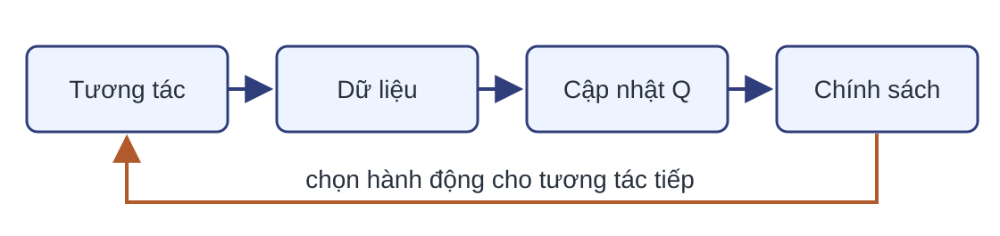
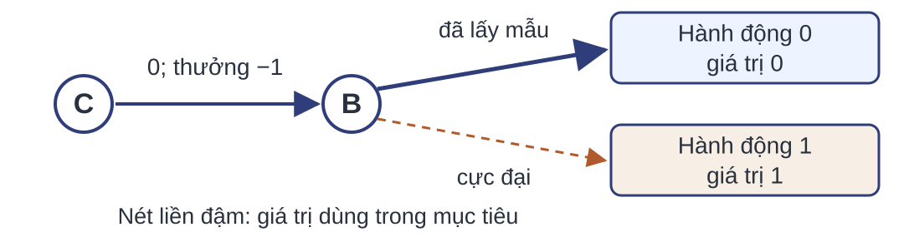
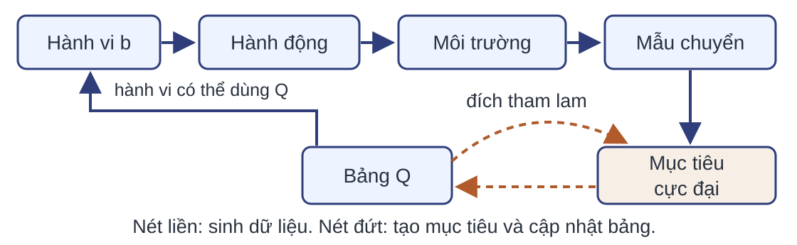
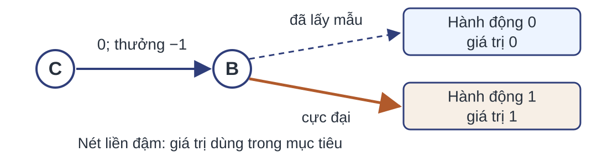

Điều khiển phi mô hình
Bài 06 · Học tăng cường
Monte Carlo, Sarsa và Q-learning khác nhau ở mục tiêu cập nhật (update target), tức ở dữ liệu cần có.
Trường Đại học Công nghệ, Đại học Quốc gia Hà Nội
Năm học 2026–2027, học kỳ 1
Điều khiển phi mô hình học một bảng giá trị hành động từ các lượt tương tác và dùng chính bảng ấy để chọn hành động, khi mô hình của môi trường không được cho trước. Monte Carlo, Sarsa và Q-learning dùng chung một khung cập nhật và chỉ khác nhau ở mục tiêu cập nhật, tức ở dữ liệu cần có trước mỗi cập nhật. Một bảng học từ hữu hạn mẫu cho quyết định hiện thời; kết luận tối ưu cần thêm các giả thiết hội tụ.
Nguồn: Bài giảng gốc (2025–2026), trang 1; Sutton và Barto (2018), §§5.3–5.4, 6.4–6.5.
Tiên quyết và quy ước
Nhắc lại: ${q_\pi(s,a)=\mathbb E_\pi[G_t\mid S_t=s,A_t=a],\quad v_\pi(s)=\sum_a\pi(a\mid s)q_\pi(s,a)}$ (Bài 03).
Nhắc lại: tham lam (greedy) theo $q_\pi$ không giảm giá trị (Bài 04);
${v_*=T_*v_*}$ với $T_*$ co khi $\gamma<1$; ${q_*(s,a)=r(s,a)+\gamma\sum_{s'}p(s'\mid s,a)v_*(s')}$.
Nhắc lại: Monte Carlo, sai phân thời gian TD(0) ước lượng $v_\pi$, $\pi$ cố định; Robbins–Monro theo trạng thái (Bài 05).
Ký hiệu: $\mathcal S$ không kết thúc, $\mathcal S^+$ thêm trạng thái kết thúc.
$m(s)=|\mathcal A(s)|$; phần thưởng (reward) $R_{t+1}$ sau $A_t$; ${G_T=0,\ S_0\sim d_0}$ (phân phối đầu).
Mỗi kết quả nhắc lại là đầu vào của một phần. Định nghĩa $q_\pi$ với hành động đầu cố định là đối tượng mà bảng $Q$ xấp xỉ. Định lý cải thiện của Bài 04 được mở rộng sang lớp chính sách mềm. $T_*$ là toán tử Bellman tối ưu trên bảng $V$; tính co của nó là nền của các định lý hội tụ. Sai phân thời gian (temporal difference, TD) TD(0) dùng mục tiêu $Y=R_{t+1}+\gamma V(S_{t+1})$; điều kiện Robbins–Monro theo trạng thái được mở rộng sang cặp.
Môi trường là một quá trình quyết định Markov (Markov decision process, MDP) hữu hạn với động lực $p(s',r\mid s,a)$ mà tác tử không biết. Kỳ vọng $\mathbb E_\pi$ lấy theo cả $\pi$ lẫn $p$; giá trị của trạng thái kết thúc bằng 0. Tên ô A–E viết chữ đứng để không trùng biến $A_t$.
Nguồn: ghi chú bài giảng Bài 03–05; Sutton và Barto (2018), §3.5, §5.1, §6.1.
Mục tiêu học tập
Phân biệt $q_\pi$, $q_*$, bảng $Q$; xác định thông tin trong một mẫu chuyển.
Tính phân phối $\varepsilon$-tham lam ($\varepsilon$-greedy) có thăm dò (exploration), kể cả khi đồng hạng.
Thực hiện Monte Carlo lần ghé đầu tiên (first-visit) trên một lượt (episode).
Thực hiện cập nhật Sarsa, Q-learning; phân biệt học theo chính sách (on-policy) và khác chính sách (off-policy).
Kiểm giả thiết hội tụ; phân biệt với dừng theo ngân sách (budget).
Mỗi mục tiêu ứng với một bài tập có lời giải trên trang chiếu. Mục tiêu 1 được đo bằng bài tập về thông tin trong một mẫu chuyển; mục tiêu 2 bằng bài tập chính sách $\varepsilon$-tham lam; mục tiêu 3 bằng bài tập lượt có cặp lặp; mục tiêu 4 bằng hai bài tập cập nhật Sarsa và so sánh hai mục tiêu; mục tiêu 5 bằng bài tập kiểm giả thiết hội tụ và bài tập tổng hợp trên tàu đổ bộ. Xử lý đúng trạng thái kết thúc và lượt bị cắt ngắn thuộc mục tiêu 4.
Nguồn: ghi chú bài giảng Bài 06, mục Mục tiêu học tập.
Nội dung
Mở đầu
Giá trị hành động và thăm dò
Điều khiển Monte Carlo
Sarsa và mục tiêu một bước
Q-learning và học khác chính sách
Điều kiện hội tụ
Tổng kết và chuyển tiếp
Phần 2 lập bảng giá trị hành động và quy tắc chọn hành động có thăm dò. Phần 3, 4 và 5 đưa ra ba cách tạo dữ liệu cho bảng: lợi tức của cả lượt, mục tiêu một bước dùng hành động kế tiếp đã chọn, và mục tiêu một bước dùng cực đại của hàng kế tiếp. Phần 6 nêu giả thiết để bảng tiến tới giá trị tối ưu. Phần 7 đặt mỗi kết quả cạnh giả thiết không được bỏ.
Tài liệu đọc trước: Sutton và Barto (2018), §§5.3–5.4 và §§6.4–6.5.
Vấn đề trung tâm
Chọn hành động tại D khi thiếu mô hình.
Bảng $Q$ theo cặp; thử mọi hành động.
Lượt hoàn chỉnh: trung bình lợi tức (return), lần ghé đầu tiên.
Giữa lượt: $R+\gamma Q(S',A')$.
Dữ liệu từ chính sách còn thăm dò, mục tiêu theo chính sách tham lam: ${R+\gamma\max_aQ(S',a)}$.
$\gamma<1$, độ phủ, Robbins–Monro; Sarsa thêm tham lam trong giới hạn: $Q_t\to q_*$.
Hình vẽ môi trường dùng xuyên suốt bài: ba trạng thái không kết thúc B, C, D, hai trạng thái kết thúc A và E, hành động 0 sang trái và 1 sang phải, chuyển tất định. Phần thưởng ghi trên cạnh; mỗi lượt bắt đầu tại D.
Mỗi dòng đánh số là câu trả lời có điều kiện của phần cùng số. Ký hiệu $Q(S',A')$ được định nghĩa ở phần 4, độ phủ và tham lam trong giới hạn ở phần 6; $q_*$ nhắc lại từ Bài 04. Các ví dụ tính tay dùng $\gamma=1$ và bước học hằng, nên chỉ minh họa phép tính; phần 6 dùng $\gamma=0{,}9$. Bài giảng gốc minh họa bằng các lượt dài tối đa ba bước; đó là độ dài của dữ liệu minh họa, môi trường không cắt ngắn lượt.
Nguồn: Bài giảng gốc (2025–2026), trang 6, 15.
Khung chung của quy tắc cập nhật
Nhắc lại: với $\pi$ cố định, Bài 05 cập nhật $V(S_t)\leftarrow V(S_t)+\alpha\bigl[Y-V(S_t)\bigr]$, $Y$ là mục tiêu.
Chọn hành động theo $V$ cần $p$ và $r$; theo bảng $Q$ chỉ cần so một hàng.
$Q(S_t,A_t)\leftarrow Q(S_t,A_t)+\alpha_t\bigl[Y_t-Q(S_t,A_t)\bigr]$
$Y_t$ là mục tiêu cập nhật; $\alpha_t\in(0,1]$ là bước học (step size).
Ba phương pháp của bài khác nhau ở dữ liệu tạo $Y_t$ và ở thời điểm cập nhật.
Khung này thay ô $V(S_t)$ của Bài 05 bằng ô $Q(S_t,A_t)$ của cặp vừa xảy ra: muốn chọn hành động từ $V$ phải tính $r(s,a)+\gamma\sum_{s'}p(s'\mid s,a)V(s')$, tức phải biết mô hình, còn với $Q$ chỉ cần so các số trong một hàng. Mỗi cập nhật đổi đúng một ô và kéo ô ấy về phía $Y_t$ một phần $\alpha_t$ của sai lệch $Y_t-Q(S_t,A_t)$. Với $\alpha_t=1/N$, $N$ là số mục tiêu đã dùng cho ô, cập nhật cho trung bình số học của các mục tiêu.
Mục tiêu có thể là một lợi tức quan sát trọn vẹn, hoặc chứa một giá trị ước lượng lấy từ chính bảng; trường hợp sau gọi là mục tiêu bootstrap (bootstrap target). Với $Y_t$ giữ cố định, cập nhật là một bước gradient của $\tfrac12(Y_t-Q)^2$ theo ô $Q(S_t,A_t)$; cách đọc này dẫn tới cập nhật bán gradient (semi-gradient) ở Bài 07.
Nguồn: ghi chú bài giảng Bài 05, Mục 1 và 3; Sutton và Barto (2018), §2.4, §6.1.
2. Giá trị hành động và thăm dòMuốn so sánh hai hành động tại D khi thiếu mô hình, phải ước lượng giá trị từng cặp và thử cả hai.
Bảng giá trị hành động · Thăm dò · Chính sách ε-tham lam · Cải thiện chính sách
Giá trị hành động $q_\pi$ của Bài 03 và định lý cải thiện chính sách tham lam của Bài 04 là hai kết quả được kế thừa. Dự đoán ước lượng giá trị của một chính sách cho trước; điều khiển vừa ước lượng vừa đổi chính sách. Việc cần làm là lập bảng giá trị theo cặp, chọn hành động có thăm dò và chứng minh bước cải thiện $\varepsilon$-tham lam không làm giảm giá trị khi biết $q_\pi$. Bảng $Q$ cùng quy tắc chọn hành động ấy được ba thuật toán sau dùng chung.
Thông tin trong một mẫu chuyển
Nhu cầu: chọn hành động tại D chỉ từ mẫu.
Ví dụ. Dãy năm ô, $\gamma=1$: D→E cho lợi tức $10$; D→C→B→A cho $998$.
Tác tử (agent) chỉ thấy mẫu, chẳng hạn $(\mathrm D,1,10,\mathrm E)$.
Câu hỏi: xác định dữ liệu về cặp $(\mathrm D,0)$ trong mẫu này.
Lời giải: không có; cần hai ô riêng $Q(\mathrm D,0)$, $Q(\mathrm D,1)$.
Hai lợi tức tính từ mô hình được công bố chỉ để kiểm phép tính; tác tử không biết các con số này. Mẫu $(\mathrm D,1,10,\mathrm E)$ đọc theo thứ tự trạng thái, hành động, phần thưởng, trạng thái kế tiếp; E là trạng thái kết thúc nên lượt dừng sau mẫu. Một ô $V(\mathrm D)$ theo kiểu Bài 05 trộn kết quả của hai hướng thành một số, còn tách hai hướng bằng $r+\gamma V(s')$ lại cần biết mỗi hành động dẫn tới đâu. Câu hỏi trùng Bài tập 06.1 của ghi chú bài giảng.
Nguồn: Bài giảng gốc (2025–2026), trang 3, 15.
Ví dụ: bảng khởi tạo nghiêng phải
Dãy năm ô; $0$ sang trái, $1$ sang phải Trạng thái $Q_0(s,0)$ $Q_0(s,1)$ B $0$ $1$ C $1$ $0$ D $0$ $1$
Xác định hành động có số lớn nhất ở mỗi hàng.
B: phải ${(1>0)}$; C: trái ${(1>0)}$; D: phải ${(1>0)}$.
Diễn giải: tại D bảng xếp phải trên trái, ngược với lợi tức khi đi trái liên tục ${(998>10)}$.
Bảng gán một số cho mỗi cặp hợp lệ: ba trạng thái không kết thúc, hai hành động, sáu ô. Tên "nghiêng phải" chỉ việc bảng xếp hành động phải trên hành động trái tại ô bắt đầu D. Hành động 1 tại D luôn kết thúc lượt với phần thưởng 10, nên giá trị thật của cặp này là 10 dưới mọi chính sách, trong khi bảng ghi 1: số khởi tạo chưa là quan sát. Số 998 là lợi tức khi từ D đi trái liên tục, chưa phải lợi tức của chính sách tham lam theo bảng này. Muốn biết bảng phải xấp xỉ đại lượng nào, cần nói rõ giá trị của một hành động là lợi tức trung bình trong điều kiện nào.
Nguồn: Bài giảng gốc (2025–2026), trang 15.
Ví dụ: chính sách luôn đi trái
Dãy năm ô, $\gamma=1$; $\pi_L$ chọn trái tại B, C, D.
Tính lợi tức từ D theo hành động đầu, sau đó theo $\pi_L$.
Hành động đầu $0$: D→C→B→A, lợi tức $-1-1+1000=998$.
Hành động đầu $1$: D→E, lợi tức $10$.
Diễn giải: cùng chính sách tiếp nối $\pi_L$, chỉ khác hành động đầu.
Ví dụ chuẩn bị ký hiệu $q_\pi$: một giá trị gắn với cặp trạng thái–hành động phải cố định hành động đầu và nói rõ chính sách quyết định phần còn lại của lượt. Vì chuyển tất định, trung bình bằng chính lợi tức. Kiểm tra: $\pi_L$ chọn 0 tại D với xác suất 1, nên lợi tức trung bình khi bắt đầu tại D theo $\pi_L$ bằng $1\cdot998+0\cdot10=998$, đúng bằng giá trị của hành động 0.
Nguồn: Bài giảng gốc (2025–2026), trang 7, 15; ghi chú bài giảng, Ví dụ 06.3.
Bảng giá trị hành động
Nhắc lại: giá trị hành động (action value) của $\pi$ (Bài 03):
$q_\pi(s,a)=\mathbb E_\pi\bigl[G_t\mid S_t=s,\ A_t=a\bigr]$
$A_t=a$ cố định hành động đầu, sau đó theo $\pi$; ví dụ $q_{\pi_L}(\mathrm D,0)=998$.
Định nghĩa. Bảng giá trị hành động $Q$ gán một số thực cho mỗi cặp hợp lệ (Định nghĩa 06.1).
$M=\sum_{s\in\mathcal S}m(s)$ ô; khởi tạo $Q_0$; $Q(s,\cdot)=0$ khi $s\notin\mathcal S$.
Nhắc lại: giá trị tối ưu $q_*(s,a)=\max_\pi q_\pi(s,a)$ khi $0\le\gamma<1$ (Bài 04).
Có ba đối tượng cần giữ riêng. $q_\pi$ xác định bởi chính sách và môi trường, không phụ thuộc dữ liệu. $q_*$ là giá trị tốt nhất của mỗi cặp, định nghĩa trong MDP hữu hạn có phần thưởng bị chặn và $0\le\gamma<1$; cực đại lấy trên các chính sách Markov dừng (stationary policy), tức không đổi theo thời gian, khác với việc dừng thuật toán. $Q$ là bảng số do thuật toán giữ, ước lượng $q_\pi$ hoặc $q_*$ tùy thuật toán, và có thể sai tùy ý trước khi có dữ liệu.
Dãy năm ô dùng $\gamma=1$ nên nằm ngoài giả thiết $\gamma<1$ của bài: chính sách đi vòng giữa B và C có lợi tức $-k$ sau $k$ bước, không hữu hạn khi $k\to\infty$.
Nguồn: Bài giảng gốc (2025–2026), trang 4, 7; Sutton và Barto (2018), §3.5–3.6.
Nhu cầu thăm dò
Nhu cầu: ô chưa được thử không nhận mẫu nào, nên giữ mãi giá trị khởi tạo.

Với bảng nghiêng phải, chọn tham lam tại D luôn cho lượt D→E.
Ô $Q(\mathrm D,0)$ giữ mãi $0$, dù đi trái liên tục cho lợi tức $998>10$.
Hình vẽ vòng của bài toán điều khiển: chính sách sinh dữ liệu, dữ liệu cập nhật bảng $Q$, bảng xác định chính sách cho lần tương tác sau. Mũi tên quay lại là điểm khác với bài toán dự đoán của Bài 05, nơi chính sách cố định. Cách chọn hành động quyết định ô nào nhận dữ liệu; một chính sách không bao giờ thử $(\mathrm D,0)$ sẽ không bao giờ có dữ liệu để đổi ý. Nhu cầu này dẫn tới quy tắc vẫn thử các hành động chưa được ưu tiên.
Nguồn: Bài giảng gốc (2025–2026), trang 6, 10–11; Sutton và Barto (2018), §5.3–5.4.
Ví dụ: xác suất chọn hành động tại D
Hàng D: $Q(\mathrm D,0)=0$, $Q(\mathrm D,1)=1$; $m(\mathrm D)=2$; tham số thăm dò $\varepsilon=\tfrac14$.
Thăm dò: xác suất $\tfrac14$, chọn đều, mỗi hành động $\tfrac18$.
Khai thác (exploitation): xác suất $\tfrac34$, chọn cực đại $1$.
$\Pr(A=0\mid\mathrm D)=\tfrac18,\qquad\Pr(A=1\mid\mathrm D)=\tfrac34+\tfrac18=\tfrac78$
Đồng hạng: mỗi hành động $\tfrac18+\tfrac38=\tfrac12$.
Diễn giải: thăm dò cũng chọn được cực đại, nên $\Pr(A=0\mid\mathrm D)=\tfrac18\ne\tfrac14$.
Tác tử dành phần lớn xác suất cho hành động tốt nhất theo bảng hiện tại và một phần nhỏ $\varepsilon$ để chọn đều trong mọi hành động. Khi nhiều hành động cùng đạt cực đại, phần khai thác $\tfrac34$ chia đều cho chúng, nên mỗi hành động nhận $\tfrac38$ từ phần này. Kiểm tra: $\tfrac18+\tfrac78=1$ và $\tfrac12+\tfrac12=1$. Nhầm lẫn thường gặp là coi $\varepsilon$ là xác suất chọn hành động khác hành động tốt nhất; với $m$ hành động và một cực đại, xác suất ấy là $\varepsilon(m-1)/m$.
Nguồn: Bài giảng gốc (2025–2026), trang 7, 11; Sutton và Barto (2018), §5.4.
Chính sách $\varepsilon$-tham lam
Định nghĩa. Với $\mathcal G_Q(s)=\operatorname{arg\,max}_aQ(s,a)$ và $\varepsilon\in[0,1]$, chính sách $\varepsilon$-tham lam theo $Q$ là
$$\pi_\varepsilon(a\mid s)=\frac{\varepsilon}{m(s)}+(1-\varepsilon)\,\frac{\mathbf 1\{a\in\mathcal G_Q(s)\}}{|\mathcal G_Q(s)|}.$$
Định nghĩa. Chính sách $\pi$ gọi là $\varepsilon$-mềm ($\varepsilon$-soft) nếu $\pi(a\mid s)\ge\varepsilon/m(s)$ với mọi $s$, $a$.
$\varepsilon=0$: chính sách tham lam, quy tắc phá hòa (tie-breaking) chia đều; $\varepsilon=1$: chọn đều.
Mọi chính sách $\varepsilon$-tham lam đều $\varepsilon$-mềm; chiều ngược lại sai.
Số hạng thứ nhất $\varepsilon/m(s)$ là phần chọn đều, cộng lại trên mọi hành động bằng $\varepsilon$; số hạng thứ hai chia phần khai thác $1-\varepsilon$ đều cho các hành động đồng hạng cực đại; $\mathbf 1\{\cdot\}$ bằng 1 khi điều kiện đúng. Với $\mathcal G_Q(\mathrm D)=\{1\}$ và $\varepsilon=\tfrac14$, công thức cho lại $(\tfrac18,\tfrac78)$. Với hai hành động và $\varepsilon=\tfrac14$, chính sách $(0{,}3;\,0{,}7)$ là $\varepsilon$-mềm nhưng không $\varepsilon$-tham lam.
Trên tàu đổ bộ (môi trường LunarLander của Gymnasium), mỗi ô có bốn hành động: hàng $(1;\,3;\,3;\,0)$ với $\varepsilon=0{,}2$ cho $(0{,}05;\,0{,}45;\,0{,}45;\,0{,}05)$. Với $\varepsilon_{\min}=0{,}05$ của bài thực hành, mỗi hành động không cực đại vẫn có xác suất $0{,}0125$ ở mỗi lần ghé ô. Mọi chính sách $\varepsilon$-tham lam đều $\varepsilon$-mềm, nên bước cải thiện muốn giữ thăm dò phải nằm trong lớp $\varepsilon$-mềm.
Nguồn: Bài giảng gốc (2025–2026), trang 7, 11, 24; Sutton và Barto (2018), §5.4; notebook thực hành Bài 06, phần 5.
Cải thiện chính sách khi giữ thăm dò
Nhu cầu: cải thiện mà vẫn giữ xác suất $\varepsilon/m(s)$ cho mỗi hành động.
Ví dụ. Một trạng thái, ba hành động kết thúc lượt, phần thưởng ${3;\,3;\,-1}$: ${q_\pi=(3;\,3;\,-1)}$; $\varepsilon=0{,}3$.
Chính sách Phân phối Giá trị $\pi$, $0{,}3$-mềm $(0{,}1;\,0{,}1;\,0{,}8)$ $-0{,}2$ $\pi'$, $0{,}3$-tham lam theo $q_\pi$ $(0{,}45;\,0{,}45;\,0{,}1)$ $2{,}6$
Trực quan. Phần sàn $0{,}1$ chung; $\pi'$ dồn phần còn lại $0{,}7$ vào cực đại.
Định lý cải thiện của Bài 04 dùng chính sách tham lam, mà chính sách tham lam có thể để một ô không bao giờ được thử. Ví dụ một bước cho phép so sánh trực tiếp. Phần sàn đóng góp như nhau cho hai chính sách: $0{,}1\cdot(3+3-1)=0{,}5$. Phần còn lại của $\pi$ là $0{,}7$ đặt hết vào hành động có giá trị $-1$, đóng góp $-0{,}7$; phần còn lại của $\pi'$ đóng góp $0{,}7\cdot3=2{,}1$. Kiểm tra: $0{,}5-0{,}7=-0{,}2$ và $0{,}5+2{,}1=2{,}6$. Trung bình có trọng số không vượt cực đại; khi lượt dài hơn một bước, cần thêm toán tử Bellman để chuyển so sánh một bước thành so sánh giá trị.
Nguồn: ghi chú bài giảng, Ví dụ 06.5 (số liệu sư phạm tự xây dựng); Sutton và Barto (2018), §5.4.
Cải thiện chính sách $\varepsilon$-tham lam
Mệnh đề. Quá trình quyết định Markov (Markov decision process, MDP) hữu hạn, phần thưởng bị chặn, ${0\le\gamma<1}$.
Giả thiết: $\pi$ là $\varepsilon$-mềm, $q_\pi$ biết chính xác; $\pi'$ là $\varepsilon$-tham lam theo $q_\pi$, cùng $\varepsilon$.
Kết luận:
$\displaystyle\sum_a\pi'(a\mid s)\,q_\pi(s,a)\ \ge\ v_\pi(s)$ và $v_{\pi'}(s)\ \ge\ v_\pi(s)$, với mọi $s\in\mathcal S$.
Ý nghĩa: trong lớp $\varepsilon$-mềm, $\varepsilon$-tham lam không giảm giá trị (Mệnh đề 06.6).
$\varepsilon=0$ là trường hợp tham lam của định lý cải thiện Bài 04.
Ba giả thiết có vai trò riêng. Bỏ "$q_\pi$ chính xác": với $\pi=(0{,}45;\,0{,}45;\,0{,}1)$ của ví dụ trước và bảng sai $(-1;\,-1;\,3)$, chính sách $0{,}3$-tham lam theo bảng là $(0{,}1;\,0{,}1;\,0{,}8)$, giá trị giảm từ $2{,}6$ xuống $-0{,}2$. Bỏ "$\pi$ là $\varepsilon$-mềm": chính sách xác định (deterministic policy) chọn hành động 0 có giá trị 3, lớn hơn $2{,}6$ của chính sách $0{,}3$-tham lam. Bỏ "$\gamma<1$": bước giới hạn của chứng minh không còn căn cứ.
Mệnh đề chỉ so sánh trong lớp $\varepsilon$-mềm: lặp lại bước này dẫn tới chính sách tốt nhất trong lớp, có thể kém chính sách tối ưu, như $2{,}6<3$ trong ví dụ trước.
Nguồn: Bài giảng gốc (2025–2026), trang 24; Sutton và Barto (2018), §5.4.
Chứng minh: cải thiện chính sách $\varepsilon$-tham lam
Với $\varepsilon<1$, đặt $w_a=w(a\mid s)=\dfrac{\pi(a\mid s)-\varepsilon/m(s)}{1-\varepsilon}\ge0$, $\sum_aw_a=1$, $\bar q(s)=\sum_aq_\pi(s,a)/m(s)$.
$\begin{aligned}\textstyle\sum_a\pi'(a\mid s)\,q_\pi(s,a)&=\varepsilon\,\bar q(s)+(1-\varepsilon)\max\nolimits_aq_\pi(s,a)\\&\ge\varepsilon\,\bar q(s)+(1-\varepsilon)\textstyle\sum_aw_a\,q_\pi(s,a)=v_\pi(s).\end{aligned}$
Nhắc lại: $T_{\pi'}$ đơn điệu, là ánh xạ co hệ số $\gamma$ với điểm bất động $v_{\pi'}$ (Bài 04).
Vì $q_\pi(s,a)=r(s,a)+\gamma\sum_{s'}p(s'\mid s,a)\,v_\pi(s')$, vế trái là $(T_{\pi'}v_\pi)(s)$.
Suy ra ${v_\pi\le T_{\pi'}v_\pi\le T_{\pi'}^2v_\pi\le\cdots\to v_{\pi'}}$.
Với $\varepsilon=1$, $\pi$ và $\pi'$ cùng là chính sách đều; hai vế bằng nhau. $\square$
Dòng đầu của chuỗi dùng định nghĩa chính sách $\varepsilon$-tham lam: các hành động trong tập cực đại cùng giá trị cực đại và chia nhau phần $1-\varepsilon$. Dòng thứ hai dùng việc trung bình có trọng số $w$ không vượt cực đại; đẳng thức cuối thu được khi gộp hai tổng, vì $\varepsilon/m(s)+(1-\varepsilon)w(a\mid s)=\pi(a\mid s)$, và $v_\pi(s)=\sum_a\pi(a\mid s)q_\pi(s,a)$.
Đẳng thức $q_\pi=r+\gamma\sum_{s'}p\,v_\pi$ cho phép viết vế trái thành toán tử Bellman $T_{\pi'}$ tác động lên $v_\pi$. Tính đơn điệu giữ chiều bất đẳng thức qua mỗi lần áp dụng $T_{\pi'}$; tính co bảo đảm dãy hội tụ tới đúng $v_{\pi'}$. Giả thiết $\varepsilon$-mềm dùng ở bước đặt $w$, $q_\pi$ chính xác dùng ở việc đồng nhất vế trái với $T_{\pi'}v_\pi$, và $\gamma<1$ dùng ở bước giới hạn.
Nguồn: ghi chú bài giảng, chứng minh Mệnh đề 06.6 và Nhận xét 06.5; Sutton và Barto (2018), §5.4.
Bài tập: chính sách $\varepsilon$-tham lam trên dãy năm ô
Câu hỏi: dãy năm ô, $\gamma=1$; hành động $0$ trái, $1$ phải.
Hàng D là ${(0;\,1),\ \varepsilon=0{,}2}$: tính xác suất mỗi hành động.
Một trạng thái ba hành động, hàng ${(4;\,1;\,1),\ \varepsilon=0{,}6}$: tính phân phối.
Trong $q_\pi(\mathrm D,0)$, nêu hành động cố định và hành động theo $\pi$.
Kiểm điều kiện của mệnh đề cải thiện (Mệnh đề 06.6) với bảng nghiêng phải.
Bài tập kiểm tra năng lực tính phân phối $\varepsilon$-tham lam, phân biệt $q_\pi$ với bảng $Q$ và đối chiếu giả thiết của mệnh đề cải thiện. Câu 2 xét một trạng thái ngoài dãy năm ô.
Gợi ý: tách nhánh thăm dò và nhánh khai thác; với câu 4, đối chiếu từng giả thiết của mệnh đề, gồm bảng dùng để tạo $\pi'$ và hệ số chiết khấu của dãy năm ô. Bài tập trùng Bài tập 06.2 của ghi chú bài giảng.
Bài tập: chính sách $\varepsilon$-tham lam trên dãy năm ô
Lời giải:
Cực đại duy nhất là $1$: $\Pr(0)=0{,}2/2=0{,}1$, $\Pr(1)=0{,}8+0{,}1=0{,}9$.
$\mathcal G_Q=\{0\}$: $(0{,}2+0{,}4;\,0{,}2;\,0{,}2)=(0{,}6;\,0{,}2;\,0{,}2)$.
$A_t=0$ cố định; từ bước $t+1$ theo $\pi$.
Chưa đủ: $Q_0(\mathrm D,1)=1\ne10=q_\pi(\mathrm D,1)$; dãy dùng $\gamma=1$.
Ở câu 1 và câu 2, tổng xác suất đều bằng 1: $0{,}1+0{,}9=1$ và $0{,}6+0{,}2+0{,}2=1$. Ở câu 2, phần khai thác $1-0{,}6=0{,}4$ dồn vào hành động cực đại duy nhất. Ở câu 4, hành động 1 tại D luôn kết thúc lượt với phần thưởng 10, nên mọi chính sách có $q_\pi(\mathrm D,1)=10$; bảng khởi tạo không là giá trị hành động của chính sách nào. Lỗi thường gặp là coi bảng khởi tạo như $q_\pi$ rồi áp dụng mệnh đề cải thiện. Thay $q_\pi$ bằng một đại lượng đo được từ dữ liệu là nhiệm vụ của phần Monte Carlo.
3. Điều khiển Monte CarloMuốn ước lượng giá trị cặp từ lượt hoàn chỉnh, phải gắn lợi tức với lần ghé đầu tiên của cặp.
Lần ghé đầu tiên · Bộ đếm lợi tức · Trung bình gia tăng · Chính sách cố định trong lượt
Mệnh đề cải thiện $\varepsilon$-tham lam cần $q_\pi$ chính xác, trong khi tác tử chỉ có các lượt nó tự sinh ra. Trung bình các lợi tức quan sát được sau từng cặp thay cho $q_\pi$; ghép bước đánh giá bằng mẫu ấy với bước cải thiện $\varepsilon$-tham lam cho thuật toán điều khiển Monte Carlo. Mọi cập nhật của thuật toán ấy phải chờ lượt kết thúc, và phần sau bỏ đúng yêu cầu này.
Lợi tức của cặp trạng thái–hành động
Nhu cầu: thay $q_\pi$ chính xác bằng đại lượng đo được từ lượt.
Nhắc lại: Monte Carlo dự đoán: trung bình lợi tức sau mỗi lần ghé $s$ (Bài 05).
Trực quan. Sinh trọn một lượt theo chính sách cố định.
Gắn $G_t$ với cặp $(S_t,A_t)$; cập nhật trung bình của cặp.
Lập chính sách $\varepsilon$-tham lam mới cho lượt sau.
Với lượt D→E, tác tử quan sát lợi tức 10 sau cặp $(\mathrm D,1)$; với lượt D→C→B→A, lợi tức 998 sau cặp $(\mathrm D,0)$. Chỉ những lợi tức đứng sau một lần thực hiện $a$ tại $s$ mới được tính cho ô $(s,a)$. Chính sách không đổi trong lượt, nên các lợi tức của lượt đánh giá đúng chính sách đã sinh ra nó; chính sách sinh dữ liệu cũng là chính sách được đánh giá. Mô tả chưa là thuật toán vì chưa nói cách xử lý một cặp xuất hiện nhiều lần trong một lượt.
Nguồn: Bài giảng gốc (2025–2026), trang 4, 9–11; Sutton và Barto (2018), §5.3.
Ví dụ: một lượt tham lam D→E
Bảng nghiêng phải: B $(0,1)$, C $(1,0)$, D $(0,1)$; mọi $N(s,a)=0$; $\varepsilon=0$.
Tính cập nhật sau lượt.
Cực đại tại D là $1$: lượt D→E, $G_0=10$ gắn với $(\mathrm D,1)$.
$N(\mathrm D,1)=1,\qquad Q(\mathrm D,1)\leftarrow1+\dfrac{10-1}{1}=10$
Diễn giải: khởi tạo không là quan sát; $(1+10)/2=5{,}5$ là sai.
$N(s,a)$ là số lợi tức đã dùng cho cặp $(s,a)$; bộ đếm tăng trước khi chia, nên sau một lợi tức, giá trị mới bằng đúng lợi tức ấy và giá trị khởi tạo bị thay hẳn. Năm ô còn lại giữ nguyên, và chính sách tham lam chỉ cập nhật được $(\mathrm D,1)$. Trước khi xét các lượt dài hơn, cần quy định lợi tức nào được gắn với một cặp xuất hiện nhiều lần trong lượt, và bộ đếm $N$ tăng lúc nào.
Nguồn: Bài giảng gốc (2025–2026), trang 15–16; ghi chú bài giảng, Ví dụ 06.6.
Lần ghé đầu tiên của cặp
Nhắc lại: lần ghé đầu tiên của $s$: $t$ nhỏ nhất có $S_t=s$ (Bài 05).
Định nghĩa. Lần ghé đầu tiên của cặp $(s,a)$ trong lượt là
$f(s,a)=\min\{t<T:\ (S_t,A_t)=(s,a)\}.$
Chỉ $G_{f(s,a)}$ được gắn với $(s,a)$ (Định nghĩa 06.8).
$N(s,a)$ đếm lợi tức đã gắn, từ $0$; tăng $N$ trước khi cập nhật
$Q(s,a)\leftarrow Q(s,a)+\dfrac{G_{f(s,a)}-Q(s,a)}{N(s,a)}.$
Định nghĩa khác Bài 05 ở một điểm: hai lần ghé cùng trạng thái với hai hành động khác nhau thuộc hai cặp khác nhau. Nếu một lượt đi D (trái), C (phải), D (trái), C (trái), thì $(\mathrm C,1)$ có lần ghé đầu tiên tại $t=1$ và $(\mathrm C,0)$ tại $t=3$. Mỗi cặp đóng góp nhiều nhất một lợi tức trong một lượt.
Nhắc lại trung bình gia tăng của Bài 05: với bộ đếm bắt đầu từ 0 và tăng trước khi chia, $Q\leftarrow Q+(G-Q)/N$ cho đúng trung bình số học của các lợi tức đã gắn. $N$ đếm lợi tức của cặp, không phải số lượt toàn cục. Lợi tức tính lùi, còn lần ghé đầu tiên xác định theo chiều thời gian. Định nghĩa được áp dụng ngay trên một lượt sinh bởi chính sách $\tfrac14$-tham lam.
Nguồn: Bài giảng gốc (2025–2026), trang 10–11; Sutton và Barto (2018), §5.1, §5.3.
Ví dụ: lượt thăm dò trên dãy năm ô
Bảng nghiêng trái: B $(0,1)$, C $(1,0)$, D $(1,0)$; $\varepsilon=0{,}25$; dãy ${0{,}8;\ 0{,}6;\ 0{,}2;\ 0{,}4}$.
Đọc $u$: $u>0{,}25$ thì chọn cực đại; nếu không, đọc số tiếp, $\le0{,}5$ thì chọn trái.
Xác định lượt sinh ra từ D.
Ô $u$ Số phụ Hành động D $0{,}8$ — $0$, cực đại C $0{,}6$ — $0$, cực đại B $0{,}2$ $0{,}4$ $0$, thăm dò
Lượt: D→C→B→A, phần thưởng $-1,-1,1000$.
Dãy số thay nguồn ngẫu nhiên để mọi người tái tạo được cùng một lượt: $x_0=1$, $x_j=(2x_{j-1}+1)\bmod5$, $u_j=(x_j+1)/5$, cho $x_1,\dots,x_4=3,2,0,1$. Chỉ số $j$ đếm số đã dùng, khác thời điểm $t$ của lượt, vì nhánh thăm dò dùng hai số. Bảng nghiêng trái lấy từ bài giảng gốc (trang 17) và chỉ khác bảng nghiêng phải ở hàng D; ở bảng này $(\mathrm D,0)$ đã là hành động tham lam, nên phép thăm dò của lượt xảy ra ở B. Dưới bảng nghiêng phải, xác suất thử $(\mathrm D,0)$ ở mỗi lượt là $\varepsilon/2$. Với các số đều trên $[0,1]$, quy tắc cho xác suất chọn hành động không cực đại là $\tfrac14\cdot\tfrac12=\tfrac18=\varepsilon/m$, khớp định nghĩa. Dãy có chu kỳ bốn; nó chỉ là dữ kiện tính tay, không nói gì về độ phủ dài hạn.
Nguồn: Bài giảng gốc (2025–2026), trang 17.
Ví dụ: lượt thăm dò trên dãy năm ô, cập nhật lần ghé đầu tiên
Tính lùi: $G_2=1000$, $G_1=999$, $G_0=998$; mỗi cặp ghé một lần nên $N=1$.
Trạng thái $Q(s,0)$ $Q(s,1)$ $N(s,0)$ B $1000$ $1$ $1$ C $999$ $0$ $1$ D $998$ $0$ $1$
Diễn giải: hàng D xếp trái ($998$) trên phải ($0$); lượt sau ưu tiên trái tại D.
Dữ kiện là lượt của ví dụ trước trên bảng nghiêng trái B $(0,1)$, C $(1,0)$, D $(1,0)$, với mọi bộ đếm bằng 0. Lợi tức tính lùi từ $G_3=0$. Ba cặp $(\mathrm D,0)$, $(\mathrm C,0)$, $(\mathrm B,0)$ xuất hiện một lần, tại $t=0,1,2$; sau khi tăng bộ đếm, mỗi giá trị mới bằng lợi tức. Các ô phải giữ nguyên và bộ đếm của chúng vẫn bằng 0. Hình đặt lợi tức dưới ô xuất phát của mỗi thời điểm: $G_t$ là tổng các phần thưởng trên các cạnh bên phải thời điểm $t$. Kết quả là một cập nhật từ dữ liệu; nó không chứng nhận giá trị thật của chính sách mới tăng lên.
Nguồn: Bài giảng gốc (2025–2026), trang 17; ghi chú bài giảng, Ví dụ 06.8.
Thuật toán điều khiển Monte Carlo: đầu vào
Thuật toán. Monte Carlo lần ghé đầu tiên (Thuật toán 06.9).
Đầu vào: môi trường lấy mẫu được, $d_0$, $\gamma$, $Q_0$, lịch $\varepsilon_k\in(0,1]$, ngân sách $K$.
Đầu ra: $Q$ và chính sách $\varepsilon_K$-tham lam theo $Q$.
Giả thiết: lượt kết thúc hầu chắc chắn (almost surely).
Lưu ý: $K$ là ngân sách, không phải tiêu chuẩn hội tụ.
Môi trường chỉ cần lấy mẫu được: thuật toán không dùng $p$ hay $r$, chỉ dùng các tập hành động hợp lệ và các lượt quan sát. Lịch $\varepsilon_k$ cố định một tham số thăm dò cho cả lượt $k$; bài giảng gốc dùng $\varepsilon_k=1/k$. Giả thiết kết thúc cần cho bước tính lợi tức: một lượt không kết thúc không cho lợi tức hoàn chỉnh nào. Hầu chắc chắn nghĩa là trên một biến cố có xác suất 1. Hết ngân sách $K$ xảy ra giữa hai lượt và không nói gì về độ chính xác của bảng.
Nguồn: Bài giảng gốc (2025–2026), trang 10–11; Sutton và Barto (2018), §5.4.
Thuật toán điều khiển Monte Carlo: các bước
$Q\leftarrow Q_0$, $N\leftarrow0$. Lượt $k=1,\dots,K$: $\pi_k$ là $\varepsilon_k$-tham lam theo $Q$.
Sinh lượt theo $\pi_k$ từ $S_0\sim d_0$; ghi $f(s,a)$ ở lần ghé đầu tiên.
$G_t=R_{t+1}+\gamma G_{t+1}$ với $t=T-1,\dots,0$, từ $G_T=0$.
Mỗi cặp có $f(s,a)$ xác định: tăng $N(s,a)$, rồi $Q\leftarrow Q+(G_{f(s,a)}-Q)/N$.
Nếu $k<K$, sang lượt sau, giữ $Q$, $N$; nếu không, trả $Q$.
Lưu ý: $Q$ và $\pi_k$ không đổi trong lượt.
Lần theo ví dụ vừa tính: với $k=1$, bảng là bảng nghiêng trái và $\pi_1$ là chính sách $\tfrac14$-tham lam; bước 2 sinh lượt D→C→B→A bằng dãy số cho trước; bước 3 cho $(998,999,1000)$; bước 4 cho bảng đã tính. Bước 4 là đánh giá bằng mẫu; bước 1 của lượt sau là cải thiện $\varepsilon$-tham lam, áp dụng cho bảng ước lượng chứ không cho $q_\pi$, nên mệnh đề cải thiện không là bảo đảm cho từng lượt.
Bộ nhớ $O(M+T)$ cho $Q$, $N$, quỹ đạo và $f$ của lượt hiện tại; bước 3–4 tốn $O(T)$ mỗi lượt khi tra cứu $f$ trong thời gian hằng. Ánh xạ $f$ đặt lại về rỗng ở đầu mỗi lượt.
Nguồn: Bài giảng gốc (2025–2026), trang 10–11; Sutton và Barto (2018), §5.4.
Điều khiển Monte Carlo trên lượt bị cắt
Nhận xét. Chỉ khi lượt kết thúc, $G_t$ mới tính được.
Ví dụ. Tàu đổ bộ (LunarLander): lượt bị cắt ngắn (truncation) ở bước $1000$.
$500$ lượt huấn luyện cuối trong bài thực hành: trung bình $655$ bước, $7\%$ bị cắt.
Suy ra Monte Carlo bỏ lượt bị cắt, chờ hàng trăm bước mỗi cập nhật.
Kết thúc lượt là sự kiện của môi trường; hết ngân sách là điểm dừng của thuật toán; cắt ngắn là việc môi trường ngừng lượt sau một số bước cố định khi trạng thái chưa kết thúc. Một tiền tố bị cắt tại trạng thái chưa kết thúc không có lợi tức hoàn chỉnh. Số liệu tàu đổ bộ (môi trường LunarLander của Gymnasium) lấy từ một lần chạy đã nhúng trong notebook: các lượt huấn luyện của Sarsa, sinh bởi chính sách hành vi $\varepsilon_k$-tham lam; bài thực hành không cài đặt điều khiển Monte Carlo, vốn cũng học trên lượt có thăm dò. Giới hạn "phải chờ lượt kết thúc" là nhu cầu của mục tiêu một bước ở phần sau. Các lợi tức trong cùng một ô đến từ những chính sách $\pi_k$ khác nhau, nên mỗi ô trộn đánh giá của nhiều chính sách.
Nguồn: ghi chú bài giảng, Nhận xét 06.10; notebook thực hành Bài 06, phần 8.1.
Bài tập: lần ghé đầu tiên trên lượt có cặp lặp
Dãy năm ô, $\gamma=1$: lượt D→C→D→C→B→A, hành động $0,1,0,0,0$, phần thưởng $-1,-1,-1,-1,1000$.
Câu hỏi:
Tính các lợi tức $G_0,\dots,G_4$.
Tính $Q(\mathrm D,0)$ và $N(\mathrm D,0)$ theo lần ghé đầu tiên, từ $N(\mathrm D,0)=0$.
Tính lại với mọi lần ghé (every-visit).
Xác định các cặp tại ô C và số lợi tức mỗi cặp nhận.
Bài tập kiểm tra năng lực tính lợi tức lùi, chọn lần ghé đầu tiên theo cặp và dùng đúng bộ đếm $N$. Nhắc lại từ Bài 05: Monte Carlo mọi lần ghé gắn với cặp lợi tức sau mỗi lần ghé, không chỉ lần đầu.
Gợi ý: đánh số thời điểm từ 0 và tính lợi tức lùi; lần ghé đầu tiên xác định theo chiều thời gian, dù lợi tức được tính theo chiều ngược. Bài tập trùng Bài tập 06.3 của ghi chú bài giảng.
Bài tập: lần ghé đầu tiên trên lượt có cặp lặp
Lời giải:
$G_4=1000$, $G_3=999$, $G_2=998$, $G_1=997$, $G_0=996$.
$(\mathrm D,0)$ xuất hiện tại $t=0$ và $t=2$; lần đầu là $t=0$: $N=1$, $Q(\mathrm D,0)=996$.
Mọi lần ghé dùng $996$ và $998$: $N=2$, $Q(\mathrm D,0)=(996+998)/2=997$.
$(\mathrm C,1)$ tại $t=1$ nhận $997$; $(\mathrm C,0)$ tại $t=3$ nhận $999$.
Hai cách chỉ khác nhau ở cặp lặp; giá trị khởi tạo không tính thành mẫu.
Lợi tức tính lùi: mỗi bước lùi cộng thêm phần thưởng $-1$ của chuyển ở thời điểm đó, với $\gamma=1$. Hai lần ghé ô C dùng hai hành động khác nhau, nên thuộc hai cặp riêng, mỗi cặp nhận đúng một lợi tức. Lỗi thường gặp là coi hai lần ghé C là hai lần ghé của cùng một đơn vị, hoặc tính giá trị khởi tạo như một quan sát khi chia trung bình. Mọi lợi tức ở đây cần phần cuối của lượt; một tiền tố như D→C→D chưa đủ cho Monte Carlo.
4. Sarsa và mục tiêu một bướcMuốn cập nhật trước khi lượt kết thúc, phải thay lợi tức chưa quan sát bằng giá trị của hành động kế tiếp.
Mục tiêu một bước · Bộ năm của mẫu chuyển · Trạng thái kết thúc · Ngân sách cập nhật
Điều khiển Monte Carlo dùng lợi tức hoàn chỉnh, nên mọi cập nhật chờ lượt kết thúc. TD(0) của Bài 05 đã giải quyết khó khăn tương tự cho $V$ bằng mục tiêu một bước. Chuyển sang bảng $Q$, phần lợi tức chưa quan sát được thay bằng giá trị của hành động kế tiếp đã chọn, và thu được thuật toán Sarsa. Hành động kế tiếp trong mục tiêu Sarsa do chính sách còn thăm dò chọn, nên bảng ước lượng giá trị của chính chính sách thăm dò ấy.
Mục tiêu một bước cho giá trị hành động
Nhu cầu: sau D→C, C chưa kết thúc; chưa có $G_0$ để cập nhật $(\mathrm D,0)$.
Nhắc lại: sai phân thời gian TD(0) thay phần lợi tức chưa thấy bằng $\gamma V(S_{t+1})$ (Bài 05):
$V(S_t)\leftarrow V(S_t)+\alpha\bigl[R_{t+1}+\gamma V(S_{t+1})-V(S_t)\bigr]$
Trực quan. Chọn trước $A'$ tại C và cam kết thực hiện nó.
Mục tiêu cho $(\mathrm D,0)$: $-1+\gamma Q(\mathrm C,A')$.
Phần lợi tức sau C là lợi tức khi tác tử tiếp tục từ C theo chính sách đang dùng, bắt đầu bằng một hành động $A'$ tại C. Nếu $A'$ được chọn trước và chắc chắn được thực hiện, ô $Q(\mathrm C,A')$ là ước lượng hiện có của đúng phần tiếp nối đó. Còn phải nói rõ bảng nào được đọc, $A'$ được chọn lúc nào, và trạng thái kết thúc được xử lý ra sao. Ba điều này được xác định trên năm mẫu chuyển cố định.
Nguồn: Bài giảng gốc (2025–2026), trang 5, 9, 12; Sutton và Barto (2018), §6.1, §6.4.
Ví dụ: năm mẫu chuyển trên dãy năm ô
$\gamma=1$, bước học hằng $\alpha=0{,}8$; bảng nghiêng phải B $(0,1)$, C $(1,0)$, D $(0,1)$.
Mẫu $S$ $A$ $R$ $S'$ $A'$ $1$ D $0$ $-1$ C $0$ $2$ C $0$ $-1$ B $0$ $3$ B $0$ $1000$ A không có $4$ D $1$ $10$ E không có $5$ D $0$ $-1$ C $0$
Mẫu 1–3: lượt D→C→B→A; mẫu 4: lượt D→E; mẫu 5 dừng ở C.
Năm mẫu là dữ kiện cố định, dùng chung cho Sarsa và Q-learning; mỗi thuật toán chạy trên một bản sao riêng của bảng nghiêng phải. $S,A,R,S',A'$ là trạng thái, hành động, phần thưởng, trạng thái kế tiếp và hành động kế tiếp đã chọn. Các hành động trong bảng là dữ kiện cho trước; mỗi hành động có xác suất dương dưới chính sách $\varepsilon$-tham lam với $\varepsilon>0$. Sau A và E, lượt mới bắt đầu tại D. Mẫu 5 thuộc lượt thứ ba mà dữ liệu dừng ở C; C vẫn là trạng thái chưa kết thúc.
Nguồn: Bài giảng gốc (2025–2026), trang 18; số liệu hành động kế tiếp hoàn thiện từ môi trường ở trang 15.
Ví dụ: năm mẫu chuyển, Sarsa ở mẫu 1–2
Bảng nghiêng phải, $\gamma=1$, $\alpha=0{,}8$, $\delta=Y-Q(S,A)$. Tính mẫu 1, 2.

Mẫu Ô $Y$ $\delta$ Giá trị mới $1$ $(\mathrm D,0)$ $-1+Q(\mathrm C,0)=0$ $0-0=0$ $0$ $2$ $(\mathrm C,0)$ $-1+Q(\mathrm B,0)=-1$ $-1-1=-2$ $1+0{,}8\cdot(-2)=-0{,}6$
Diễn giải: $Q(\mathrm B,1)=1$ lớn nhất hàng B nhưng không vào mục tiêu, vì $A'=0$.
Mỗi mục tiêu đọc bảng ngay trước cập nhật đó. Ở mẫu 1, hành động kế tiếp tại C là 0 với $Q(\mathrm C,0)=1$; mục tiêu bằng giá trị cũ nên không có thay đổi. Ở mẫu 2, hành động kế tiếp tại B là 0, nên mục tiêu dùng $Q(\mathrm B,0)=0$; kiểm tra: $1+\tfrac45\cdot(-2)=-\tfrac35$. Hình vẽ mẫu 2: nhánh nét liền đậm là giá trị của hành động đã lấy mẫu tại B, nhánh nét đứt là hành động có giá trị cực đại. Ở mẫu 1, mục tiêu 0 được tính từ giá trị khởi tạo $Q(\mathrm C,0)=1$ chưa từng được quan sát; sai lệch của bảng đi vào mục tiêu.
Nguồn: Bài giảng gốc (2025–2026), trang 13, 18; ghi chú bài giảng, Ví dụ 06.9.
Mục tiêu Sarsa
Định nghĩa. Với $Q_t$ là bảng ngay trước cập nhật và $A_{t+1}$ chọn từ $Q_t$, mục tiêu Sarsa là
$$Y_t=\begin{cases}R_{t+1}+\gamma\,Q_t(S_{t+1},A_{t+1}),&S_{t+1}\in\mathcal S,\\ R_{t+1},&S_{t+1}\in\mathcal S^+\setminus\mathcal S.\end{cases}$$
Sai số TD (TD error, Bài 05) $\delta_t=Y_t-Q_t(S_t,A_t)$; ${Q_{t+1}(S_t,A_t)=Q_t(S_t,A_t)+\alpha_t\delta_t}$, các ô khác giữ nguyên (Định nghĩa 06.11).
Tên Sarsa lấy từ bộ năm $(S_t,A_t,R_{t+1},S_{t+1},A_{t+1})$.
$A_{t+1}$ lấy từ chính sách đang sinh dữ liệu.
Mục tiêu gồm phần thưởng vừa quan sát và $\gamma$ nhân ước lượng hiện có của phần tiếp nối bắt đầu bằng $A_{t+1}$, hành động sẽ được thực hiện. Sai số TD $\delta_t$ không phải sai số so với $q_\pi$ hay $q_*$, vì $Y_t$ chứa một ước lượng. Nhánh kết thúc ($S_{t+1}$ thuộc $\mathcal S^+$ nhưng không thuộc $\mathcal S$) dùng quy ước giá trị của trạng thái kết thúc bằng 0: phần thưởng khi vào A hoặc E đã nằm trong $R_{t+1}$. Vì hành động kế tiếp do chính chính sách sinh dữ liệu chọn, Sarsa học theo chính sách; định nghĩa chính thức ở phần sau.
Hai cách hiểu sai: chọn lại $A_{t+1}$ từ bảng sau cập nhật, khiến hành động thực hiện khác hành động trong mục tiêu; và thay $Q_t(S_{t+1},A_{t+1})$ bằng ô lớn nhất của hàng, tức mục tiêu Q-learning.
Nguồn: Bài giảng gốc (2025–2026), trang 12–13; Sutton và Barto (2018), §6.4.
Thuật toán Sarsa: đầu vào
Thuật toán. Sarsa dạng bảng (Thuật toán 06.12).
Đầu vào: môi trường lấy mẫu được; $d_0,\gamma,Q_0$; $\varepsilon$ hoặc lịch $\varepsilon_t$; lịch $\alpha_n(s,a)\in(0,1]$; ngân sách $H$.
Đầu ra: $Q$ và chính sách $\varepsilon$-tham lam theo $Q$.
Giả thiết: bước học chọn trước mẫu.
Khởi tạo ${Q\leftarrow Q_0,\ n,h\leftarrow0}$, $Q(s,\cdot)=0$ khi $s\notin\mathcal S$; ${S\sim d_0}$, $A$ theo $\varepsilon$-tham lam.
${n(s,a),\ h}$: số cập nhật của cặp và tổng; dừng khi ${h=H}$.
Bước học ở lần cập nhật thứ $n$ của cặp là $\alpha_n(s,a)$, chẳng hạn hằng $0{,}8$ trong ví dụ hay $1/n$. Tham số thăm dò có thể giữ hằng, như trong các ví dụ tính tay, hoặc giảm theo một lịch; điều kiện hội tụ ở phần sau đòi lịch giảm. Dữ liệu phải sinh từ chính môi trường cần học. Thuật toán không lưu quỹ đạo: bộ nhớ $O(M)$ cho $Q$ và $n$. Kết thúc lượt chỉ dẫn tới việc lấy trạng thái đầu mới; thuật toán dừng khi hết ngân sách.
Nguồn: Bài giảng gốc (2025–2026), trang 14; Sutton và Barto (2018), §6.4.
Thuật toán Sarsa: các bước
$\alpha\leftarrow\alpha_{n(S,A)+1}(S,A)$; thực hiện $A$, nhận $R$ và $S'$.
Nếu $S'$ chưa kết thúc: lấy một lần $A'$ theo $\varepsilon$-tham lam từ $Q$ chưa cập nhật; $Y\leftarrow R+\gamma Q(S',A')$.
Nếu $S'$ kết thúc: $Y\leftarrow R$, không chọn $A'$.
$Q(S,A)\leftarrow Q(S,A)+\alpha[Y-Q(S,A)]$; tăng $n(S,A)$ và $h$. Nếu $h=H$: trả $Q$.
Nếu $S'$ chưa kết thúc: $(S,A)\leftarrow(S',A')$, thực hiện đúng $A'$. Nếu kết thúc: $S\sim d_0$, chọn $A$ mới.
Lần theo mẫu 2 của ví dụ: bước 2 chọn $A'=0$ tại B từ bảng chưa cập nhật và cho $Y=-1$; bước 4 cho $Q(\mathrm C,0)=-0{,}6$; bước 5 chuyển sang cặp $(\mathrm B,0)$ để xử lý mẫu 3. Hành động $A'$ chỉ được lấy một lần, trước cập nhật; lấy lại theo bảng mới có thể làm hành động thực hiện khác hành động đã dùng trong mục tiêu. Mỗi bước tốn một lần tra cứu $Q(S',A')$ và $O(m(S'))$ để chọn $A'$. Ở bước cuối mà $S'$ chưa kết thúc, $A'$ vẫn được chọn để tạo mục tiêu dù không được thực hiện.
Nguồn: Bài giảng gốc (2025–2026), trang 14; Sutton và Barto (2018), §6.4.
Ví dụ: năm mẫu chuyển, Sarsa ở mẫu 3–5
Bảng sau mẫu 2: B $(0;\,1)$, C $(-0{,}6;\,0)$, D $(0;\,1)$; $\gamma=1$, $\alpha=0{,}8$. Tính mẫu 3–5.
Mẫu 3, $(\mathrm B,0,1000,\mathrm A)$: A kết thúc, $Y=1000$; ${Q(\mathrm B,0)\leftarrow0+0{,}8\cdot1000=800}$.
Mẫu 4, $(\mathrm D,1,10,\mathrm E)$: E kết thúc, $Y=10$, $\delta=9$; $Q(\mathrm D,1)\leftarrow1+0{,}8\cdot9=8{,}2$.
Mẫu 5, $(\mathrm D,0,-1,\mathrm C)$, $A'=0$: $Y=-1+(-0{,}6)=-1{,}6$; ${Q(\mathrm D,0)\leftarrow0+0{,}8\cdot(-1{,}6)=-1{,}28}$.
Diễn giải: hàng D thành $(-1{,}28;\,8{,}2)$, xếp phải trên trái; $800$ tại $(\mathrm B,0)$ chưa truyền về D.
Ở mẫu 3 và 4, trạng thái kế tiếp kết thúc nên không chọn $A'$ và không cộng giá trị tiếp nối; phần thưởng cuối đã nằm trong $R$. Ở mẫu 5, C chưa kết thúc và mục tiêu dùng giá trị hiện tại $Q(\mathrm C,0)=-0{,}6$ từ mẫu 2, không dùng giá trị khởi tạo. Các số là chính xác: $8{,}2=41/5$, $-1{,}28=-32/25$. Phần thưởng 1000 chỉ đi lùi một ô mỗi lần cặp đứng trước nó được cập nhật; mẫu 2 cập nhật $(\mathrm C,0)$ trước khi $(\mathrm B,0)$ nhận 800, nên giá trị này chưa tới D. Mẫu 5 cập nhật được $(\mathrm D,0)$ trước khi lượt thứ ba kết thúc.
Nguồn: Bài giảng gốc (2025–2026), trang 18; ghi chú bài giảng, Ví dụ 06.10.
Kết thúc lượt, cắt ngắn và hết ngân sách
Nhận xét. Chỉ kết thúc lượt bỏ số hạng $\gamma Q_t(S_{t+1},A_{t+1})$.
Sự kiện Ví dụ Mục tiêu $Y_t$ Kết thúc lượt vào A, E; tàu nằm yên hoặc rơi $R_{t+1}$ Cắt ngắn tàu đổ bộ ở bước $1000$ $R_{t+1}+\gamma Q_t(S_{t+1},A_{t+1})$ Hết ngân sách sau $H$ cập nhật $R_{t+1}+\gamma Q_t(S_{t+1},A_{t+1})$; $A_{t+1}$ không thực hiện
Đặt $Y_t=R_{t+1}$ khi cắt ngắn là coi trạng thái giữa chừng như kết thúc.
Kết thúc lượt là sự kiện của môi trường: $S_{t+1}$ là trạng thái kết thúc. Cắt ngắn là việc môi trường ngừng lượt sau một số bước cố định trong khi $S_{t+1}$ chưa kết thúc; trạng thái ấy vẫn có phần tiếp nối, nên mục tiêu giữ số hạng bootstrap. Hết ngân sách là điểm dừng của thuật toán. Bài thực hành cài đặt Sarsa trên tàu đổ bộ với bảng $2187$ ô và bốn hành động; ở bước cắt ngắn 1000, mục tiêu vẫn chứa $\gamma Q(S',A')$; khi tàu vào trạng thái kết thúc với phần thưởng $\pm100$, mục tiêu chỉ là phần thưởng đó.
Nguồn: ghi chú bài giảng, Nhận xét 06.13; notebook thực hành Bài 06, phần 6 và 8.
Bài tập: cập nhật Sarsa với bước học khác
Dãy năm ô, $\gamma=1$: $Q(\mathrm D,0)=0$, $Q(\mathrm C,0)=-0{,}6$; chuyển $(\mathrm D,0,-1,\mathrm C)$, $A'=0$; $\alpha=0{,}5$.
Câu hỏi:
Tính $Y$, $\delta$, $Q(\mathrm D,0)$ mới, mỗi đại lượng một dòng.
Xác định thời điểm chọn $A'$ và hành động thực hiện tiếp tại C.
Tính lại câu 1 nếu C là trạng thái kết thúc.
Xác định mục tiêu khi ngân sách hết ngay sau câu 1.
Bài tập kiểm tra năng lực thực hiện một cập nhật Sarsa, giữ đúng thứ tự chọn $A'$ và phân biệt trạng thái kết thúc với điểm dừng thu thập dữ liệu. Gợi ý: dùng giá trị hiện tại của ô $(\mathrm C,0)$, không dùng bảng khởi tạo; đối chiếu ba sự kiện kết thúc lượt, cắt ngắn và hết ngân sách. Bài tập trùng Bài tập 06.4 của ghi chú bài giảng.
Bài tập: cập nhật Sarsa với bước học khác
Lời giải:
$\begin{aligned}Y&=-1+1\cdot(-0{,}6)=-1{,}6,\\ \delta&=-1{,}6-0=-1{,}6,\\ Q(\mathrm D,0)&\leftarrow0+0{,}5\cdot(-1{,}6)=-0{,}8.\end{aligned}$
$A'=0$ chọn ở bước 2, từ bảng chưa cập nhật; tại C thực hiện đúng $A'$.
C kết thúc: $Y=-1$, $\delta=-1$, $Q(\mathrm D,0)\leftarrow0+0{,}5\cdot(-1)=-0{,}5$.
Hết ngân sách: C chưa kết thúc nên $Y$ không đổi.
Với $\alpha=0{,}8$, câu 1 cho $-1{,}28$ như mẫu 5.
Lỗi thường gặp là dùng $Q(\mathrm C,0)=1$ của bảng khởi tạo thay cho giá trị $-0{,}6$ sau mẫu 2, cho $Y=0$; hoặc đặt $Y=R$ khi hết ngân sách, tức coi C như trạng thái kết thúc. Lỗi thứ ba là chọn lại hành động tại C sau cập nhật: hành động thực hiện khi đó có thể khác $A'$ đã dùng trong mục tiêu. Mục tiêu Sarsa phụ thuộc hành động do chính sách còn thăm dò chọn; nhu cầu tách hai vai này dẫn tới Q-learning.
5. Q-learning và học khác chính sáchMuốn học giá trị chính sách tham lam từ dữ liệu còn thăm dò, phải dùng cực đại của hàng kế tiếp.
Mục tiêu cực đại · Học khác chính sách · Bộ bốn của mẫu chuyển · Chính sách sinh dữ liệu
Sarsa cập nhật sau mỗi chuyển, nhưng hành động kế tiếp trong mục tiêu do chính sách còn thăm dò chọn, nên bảng Sarsa ước lượng giá trị của một chính sách còn thăm dò. Tách chính sách sinh dữ liệu khỏi chính sách được đánh giá, rồi thay giá trị của hành động kế tiếp bằng cực đại của hàng kế tiếp, cho Q-learning, thuật toán khác Sarsa đúng một số hạng. Điều kiện để bảng Q-learning hội tụ tới $q_*$ được xét ở phần 6.
Mục tiêu Sarsa và hành động thăm dò
Nhu cầu: giá trị của $(\mathrm C,0)$ khi từ B trở đi luôn chọn hành động tốt nhất.
Ví dụ. Mẫu 2: chính sách sinh dữ liệu chọn $A'=0$ dù ${Q(\mathrm B,1)=1>Q(\mathrm B,0)=0}$.
Sarsa dùng $Q(\mathrm B,0)$: $Q(\mathrm C,0)$ giảm từ $1$ xuống $-0{,}6$.
Trực quan. Hành động thực hiện quyết định ô được cập nhật.
Hành động trong mục tiêu quyết định chính sách được đánh giá.
Sau mỗi mẫu có hai câu hỏi khác nhau. "Hành động nào đã được thực hiện" do cơ chế sinh dữ liệu quyết định và xác định ô nào của bảng được cập nhật. "Phần tiếp nối được đánh giá theo cách chọn nào" do mục tiêu quyết định và xác định bảng xấp xỉ giá trị của chính sách nào. Trong Sarsa, hai câu có cùng câu trả lời; muốn học giá trị của việc hành động tốt nhất trong khi vẫn thăm dò, hai câu phải có câu trả lời khác nhau.
Nguồn: Bài giảng gốc (2025–2026), trang 8, 19–20; Sutton và Barto (2018), §5.5, §6.5.
Chính sách hành vi và chính sách đích

Định nghĩa. Chính sách hành vi (behavior policy) $b$ chọn hành động được thực hiện.
Chính sách đích (target policy) $\pi$ có giá trị được bảng xấp xỉ.
Theo chính sách: $b$ trùng $\pi$; khác chính sách: $b$ có thể khác $\pi$ (Định nghĩa 06.14).
Điều khiển Monte Carlo và Sarsa có $b=\pi$.
Đường nét liền là đường dữ liệu: chính sách hành vi $b$ chọn hành động, môi trường trả mẫu chuyển. Đường nét đứt là đường học: mẫu chuyển cùng bảng $Q$ tạo mục tiêu theo chính sách đích tham lam, rồi cập nhật bảng. Mũi tên "hành vi có thể dùng Q" nói rằng $b$ được phép lập từ chính bảng, chẳng hạn là $\varepsilon$-tham lam theo $Q$, nhưng hành động được thực hiện vẫn do $b$ chọn. Dùng lại các lượt cũ của một chính sách trước đó để đánh giá chính sách hiện tại cũng là học khác chính sách. Phân biệt theo và khác chính sách độc lập với phân biệt dự đoán và điều khiển.
Nguồn: Bài giảng gốc (2025–2026), trang 8, 19; Sutton và Barto (2018), §5.5.
Ví dụ: năm mẫu chuyển, Q-learning ở mẫu 1–2
Lần chạy riêng, bảng nghiêng phải, $\gamma=1$, $\alpha=0{,}8$. Tính mẫu 1, 2.

Mẫu Ô $Y$ $\delta$ Giá trị mới $1$ $(\mathrm D,0)$ $-1+\max(1,0)=0$ $0-0=0$ $0$ $2$ $(\mathrm C,0)$ $-1+\max(0,1)=0$ $0-1=-1$ $1+0{,}8\cdot(-1)=0{,}2$
Diễn giải: cùng mẫu 2, Sarsa cho $-0{,}6$ vì dùng $Q(\mathrm B,0)=0$.
Với chính sách đích là chính sách tham lam theo $Q$, phần tiếp nối từ $S'$ bắt đầu bằng hành động có giá trị lớn nhất của hàng $S'$, nên ước lượng của nó là $\max_aQ(S',a)$. Hành động kế tiếp trong dữ liệu không được dùng. Lần chạy Q-learning bắt đầu lại từ bảng nghiêng phải, không lấy kết quả Sarsa làm khởi tạo, để mọi khác biệt đến từ mục tiêu. Hình vẽ cùng chuyển với hình của Sarsa, chỉ đổi nhánh tô đậm. Giá trị cực đại 1 là số của bảng ước lượng; đi trái từ B thật ra cho phần thưởng 1000. Kiểm tra: $1-\tfrac45=\tfrac15$.
Nguồn: Bài giảng gốc (2025–2026), trang 20–21; ghi chú bài giảng, Ví dụ 06.11.
Mục tiêu Q-learning
Định nghĩa. Với $Q_t$ là bảng ngay trước cập nhật, mục tiêu Q-learning là
$$Y_t=\begin{cases}R_{t+1}+\gamma\max_{a\in\mathcal A(S_{t+1})}Q_t(S_{t+1},a),&S_{t+1}\in\mathcal S,\\ R_{t+1},&S_{t+1}\in\mathcal S^+\setminus\mathcal S.\end{cases}$$
Sai số TD và cập nhật như Sarsa (Định nghĩa 06.15).
Mục tiêu chỉ cần bộ bốn $(S_t,A_t,R_{t+1},S_{t+1})$; không cần hành động kế tiếp.
Cả phép cực đại lẫn giá trị cũ đều đọc từ cùng bảng $Q_t$. Khi $S_{t+1}$ kết thúc, hai mục tiêu Sarsa và Q-learning cùng bằng $R_{t+1}$; khi $S_{t+1}$ chưa kết thúc và $\gamma>0$, chúng trùng nhau đúng khi hành động kế tiếp của Sarsa thuộc tập cực đại. Hai nhầm lẫn thường gặp: cho rằng hành vi không ảnh hưởng tới kết quả, trong khi $b$ quyết định cặp nào được cập nhật; và đọc $\max_aQ_t(S_{t+1},a)$ như giá trị tối ưu thật. Cực đại lấy trên các ước lượng có nhiễu thường lớn hơn cực đại của giá trị thật, nên Q-learning có xu hướng ước lượng cao (Sutton và Barto, §6.7); Bài 09 xử lý hiện tượng này. Bảng Q-learning hướng tới $q_*$; khẳng định này thành định lý dưới các giả thiết ở phần sau.
Nguồn: Bài giảng gốc (2025–2026), trang 20; Sutton và Barto (2018), §6.5.
Thuật toán Q-learning: đầu vào
Thuật toán. Q-learning dạng bảng (Thuật toán 06.16).
Đầu vào: môi trường lấy mẫu được; $d_0,\gamma,Q_0$; hành vi $b$; lịch $\alpha_n(s,a)\in(0,1]$; ngân sách $H$.
Đầu ra: $Q$ và chính sách đích, tham lam theo $Q$.
Giả thiết: bước học được chọn trước mẫu.
Khởi tạo $Q\leftarrow Q_0$, $Q(s,\cdot)=0$ khi $s\notin\mathcal S$; ${n,h\leftarrow0}$; $S\sim d_0$.
Thuật toán lặp lại khung của Sarsa với mục tiêu cực đại; hành vi $b$ thường là chính sách $\varepsilon$-tham lam theo bảng hiện tại. Đầu ra là chính sách tham lam theo bảng cuối, tức chính sách đích, khác với chính sách hành vi đã dùng để sinh dữ liệu. Dữ liệu phải sinh từ chính môi trường cần học. Bộ nhớ $O(M)$, không lưu quỹ đạo; tìm cực đại tại $S'$ tốn $O(m(S'))$, cộng chi phí chọn hành động theo $b$. Ngân sách $H$ là điểm dừng thực hành, không phải tiêu chuẩn hội tụ.
Nguồn: Bài giảng gốc (2025–2026), trang 20; Sutton và Barto (2018), §6.5.
Thuật toán Q-learning: các bước
Chọn $A\sim b(\cdot\mid S)$; $\alpha\leftarrow\alpha_{n(S,A)+1}(S,A)$; thực hiện $A$, nhận $R$, $S'$.
$Y\leftarrow R+\gamma\max_aQ(S',a)$ nếu $S'$ chưa kết thúc; $Y\leftarrow R$ nếu kết thúc.
$Q(S,A)\leftarrow Q(S,A)+\alpha[Y-Q(S,A)]$; tăng $n(S,A)$, $h$; nếu $h=H$, trả $Q$.
$S\leftarrow S'$ nếu chưa kết thúc, $S\sim d_0$ nếu kết thúc; về bước 1.
Lưu ý: khác Sarsa, hành động tiếp theo được chọn sau cập nhật.
Q-learning và Sarsa chỉ khác nhau ở một số hạng: $\gamma Q(S',A')$ được thay bằng $\gamma\max_aQ(S',a)$. Thay đổi này có ba hệ quả. Sarsa cần bộ năm và phải giữ $A'$ để thực hiện; Q-learning chỉ cần bộ bốn và chọn hành động sau cập nhật. Bảng Sarsa hướng tới giá trị của chính sách $\varepsilon$-tham lam đang dùng; bảng Q-learning hướng tới $q_*$. Khi hành vi là chính sách tham lam, mỗi $A'$ của Sarsa thuộc tập cực đại, nên hai mục tiêu bằng nhau trên cùng dữ liệu.
Nguồn: Sutton và Barto (2018), §6.5; ghi chú bài giảng, Thuật toán 06.16.
Ví dụ: năm mẫu chuyển, Sarsa và Q-learning
Mẫu Ô Sarsa Q-learning $1$ $(\mathrm D,0)$ $0$ $0$ $2$ $(\mathrm C,0)$ $-0{,}6$ $0{,}2$ $3$ $(\mathrm B,0)$ $800$ $800$ $4$ $(\mathrm D,1)$ $8{,}2$ $8{,}2$ $5$ $(\mathrm D,0)$ $-1{,}28$ $-0{,}64$
Hai lần chạy riêng từ bảng nghiêng phải, $\gamma=1$, $\alpha=0{,}8$; bảng ghi giá trị mới của ô được cập nhật.
Tính mẫu 5 của Q-learning: ${Y=-1+\max(0{,}2;\,0)=-0{,}8}$, giá trị mới ${0+0{,}8\cdot(-0{,}8)=-0{,}64}$.
Diễn giải: khác biệt sinh ở mẫu 2 qua hàng B, truyền từ C về D ở mẫu 5.
Mỗi cột bắt đầu từ bản sao riêng của bảng nghiêng phải và dùng các kết quả trước đó trong chính cột ấy. Mẫu 1 cho cùng cập nhật vì $A'=0$ thuộc tập cực đại của hàng C; mẫu 3 và 4 cho cùng cập nhật vì đi vào trạng thái kết thúc. Bảng cuối: Sarsa có hàng D là $(-1{,}28;\,8{,}2)$, Q-learning có $(-0{,}64;\,8{,}2)$; cả hai xếp phải trên trái tại D, trong khi đi trái liên tục cho 998. Năm mẫu chưa đủ để kết luận về chính sách tốt nhất. Kiểm tra: $-0{,}64=\tfrac45\cdot(-\tfrac45)$. Hai cột cùng khởi tạo, nên mọi khác biệt đến từ mục tiêu.
Nguồn: Bài giảng gốc (2025–2026), trang 18, 21; ghi chú bài giảng, Ví dụ 06.12.
Dữ liệu hành vi trong Q-learning
Dự đoán TD(0) khác chính sách: kỳ vọng theo $\pi$, hành động do $b$ chọn.
Khi đó nhân mẫu với tỉ số lấy mẫu quan trọng (importance sampling) ${\rho=\pi(A\mid S)/b(A\mid S)}$.
Nhận xét. Q-learning một bước không cần $\rho$: $A_t$ cố định trong ô, tiếp nối dùng cực đại.
Giả thiết: mẫu theo động lực môi trường; $b$ thực hiện mãi mọi cặp cần học.
Trong dự đoán TD(0) khác chính sách, mục tiêu $R+\gamma V(S')$ được sinh bởi hành động do $b$ chọn, trong khi giá trị cần ước lượng là kỳ vọng theo $\pi$; nhân mẫu với $\rho$ sửa lại trọng số của từng hành động. Bài giảng gốc (trang 19) dùng tỉ số này; nội dung đầy đủ nằm ở phần đọc thêm, Mục 6 của ghi chú bài giảng. Ô $Q(S_t,A_t)$ ước lượng $q_*(S_t,A_t)$, trong đó hành động đầu đã cố định, nên phân phối của $A_t$ không đi vào mục tiêu. Không cần tỉ số không có nghĩa mọi dữ liệu đều dùng được: một cặp mà $b$ không thực hiện giữ mãi giá trị khởi tạo, và phát lại vô hạn lần một tập mẫu hữu hạn không khôi phục được phân phối chuyển.
Nguồn: Bài giảng gốc (2025–2026), trang 8, 19, 28; ghi chú bài giảng, Nhận xét 06.17.
Ví dụ: một chuyển của tàu đổ bộ
Bài thực hành: $\gamma=0{,}99$, $\alpha=0{,}1$, $Q_t(S_t,A_t)=3$, $R_{t+1}=-1{,}5$, bốn hành động.
$S_{t+1}$ chưa kết thúc, hàng $Q_t(S_{t+1},\cdot)=(2;\,5;\,5;\,1)$; Sarsa đã chọn $A_{t+1}=0$.
Tính $Y_t$, $\delta_t$, $Q_{t+1}(S_t,A_t)$ cho hai thuật toán.
Thuật toán $Y_t$ $\delta_t$ $Q_{t+1}(S_t,A_t)$ Sarsa $-1{,}5+0{,}99\cdot2=0{,}48$ $-2{,}52$ $2{,}748$ Q-learning $-1{,}5+0{,}99\cdot5=3{,}45$ $0{,}45$ $3{,}045$
Diễn giải: với $A_{t+1}=0$, Sarsa kéo ô xuống còn Q-learning kéo lên.
Giả thiết độ phủ của trang trước kiểm được trên tàu đổ bộ: hành vi $b$ là $\varepsilon$-tham lam với $\varepsilon\ge\varepsilon_{\min}=0{,}05$ trên bốn hành động, nên ở mỗi lần ghé một ô, mỗi hành động có xác suất ít nhất $0{,}05/4=0{,}0125$. Hai mục tiêu dưới đây trùng nhau khi $A_{t+1}\in\{1,2\}$, tập cực đại của hàng. Tàu đổ bộ là môi trường LunarLander của Gymnasium với quan sát liên tục được chia thành 2187 ô; bốn hành động là không bật động cơ, bật động cơ định hướng trái, bật động cơ chính, bật động cơ định hướng phải. Cực đại của hàng là 5, đạt ở hành động 1 và 2. Nếu thay vào đó tàu rơi, $S_{t+1}$ kết thúc với $R_{t+1}=-100$, thì cả hai thuật toán dùng $Y_t=-100$, $\delta_t=-103$ và giá trị mới $3-10{,}3=-7{,}3$. Notebook in đúng các giá trị này.
Nguồn: notebook thực hành Bài 06, phần 6–7; ghi chú bài giảng, Ví dụ 06.13.
Bài tập: mục tiêu Sarsa và Q-learning trên cùng chuyển
Dãy năm ô, $\gamma=1$: $Q(\mathrm B,0)=800$, $Q(\mathrm B,1)=1$; chuyển $(\mathrm C,0,-1,\mathrm B)$; Sarsa đã chọn $A'=1$ tại B.
Câu hỏi:
Tính mục tiêu Sarsa và mục tiêu Q-learning.
Nêu điều kiện cần và đủ để hai mục tiêu trùng nhau khi trạng thái kế tiếp chưa kết thúc.
Nêu cặp được cập nhật trong mỗi thuật toán.
Bài tập kiểm tra năng lực phân biệt số hạng tiếp nối của hai mục tiêu trên cùng dữ liệu và vai trò của hành vi. Gợi ý: Sarsa phải dùng $A'=1$ đã cho; Q-learning dùng cực đại của hàng B; so sánh hai số hạng tiếp nối mà không đổi dữ liệu. Bài tập trùng Bài tập 06.5 của ghi chú bài giảng.
Bài tập: mục tiêu Sarsa và Q-learning trên cùng chuyển
Lời giải:
Sarsa: $-1+Q(\mathrm B,1)=-1+1=0$. Q-learning: ${-1+\max(800,1)=799}$.
Trùng khi và chỉ khi $\gamma Q(\mathrm B,A')=\gamma\max_aQ(\mathrm B,a)$; với $\gamma>0$, tức ${A'\in\mathcal G_Q(\mathrm B)}$.
Cả hai chỉ cập nhật ô $(\mathrm C,0)$ của cặp đã thực hiện.
Với $A'=1\notin\mathcal G_Q(\mathrm B)$, hai mục tiêu lệch nhau $799$.
Ở đây $A'=1\notin\mathcal G_Q(\mathrm B)=\{0\}$, nên hai mục tiêu khác nhau, khớp $0\ne799$. Không cần cực đại duy nhất: khi nhiều hành động đồng hạng, mọi $A'$ trong tập cực đại cho cùng mục tiêu. Với $\gamma=0$, hai mục tiêu luôn trùng nhau và bằng $R$. Lỗi thường gặp là để Sarsa tự thay $A'=1$ bằng hành động tốt hơn, tức biến Sarsa thành Q-learning.
6. Điều kiện hội tụMuốn bảng hội tụ tới giá trị hành động tối ưu, phải kiểm độ phủ, lịch thăm dò và lịch bước học.
Độ phủ · Tham lam trong giới hạn · Robbins–Monro theo cặp · Hội tụ hầu chắc chắn
Sarsa và Q-learning cho các bảng cụ thể sau hữu hạn mẫu, nhưng chưa có căn cứ để nói các bảng ấy tiến tới $q_*$. Bài 05 đã cho điều kiện hội tụ của TD(0) theo trạng thái với chính sách cố định. Điều kiện ấy được mở rộng sang cặp trạng thái–hành động khi chính sách thay đổi, thành một điều kiện về thăm dò, một điều kiện về bước học và hai định lý hội tụ. Danh sách giả thiết thu được dùng để kiểm bài toán tàu đổ bộ ở phần tổng kết.
Bảng Q khi một cặp không được thử
Nhu cầu: điều kiện để bảng $Q_t$ tiến tới $q_*$.
Ví dụ. Dãy năm ô với $\gamma=0{,}9$: $q_*(\mathrm D,1)=10$ và
$q_*(\mathrm D,0)=-1+0{,}9\cdot(-1)+0{,}81\cdot1000=808{,}1.$
Nhắc lại: với bảng nghiêng phải, hành vi tham lam cho mọi lượt D→E.
Suy ra $Q(\mathrm D,1)$ tiến về $10$, còn $Q(\mathrm D,0)$ giữ mãi $0\ne808{,}1$.
Với $\gamma=0{,}9$, đi trái ba lần từ D cho các phần thưởng $-1$, $-1$, $1000$ chiết khấu theo $1$, $0{,}9$, $0{,}81$; đây là giá trị tối ưu của $(\mathrm D,0)$ vì đi trái liên tục là tốt nhất từ C và B. Hành động 1 tại D luôn kết thúc với phần thưởng 10. Nếu hành vi không bao giờ thử $(\mathrm D,0)$, không có giả thiết bước học nào cứu được ô này. Muốn bảng tiến tới $q_*$, cần giả thiết về môi trường, về cách thăm dò và về bước học. Ví dụ chuyển sang $\gamma=0{,}9$ vì các định lý của phần này giả thiết $\gamma<1$.
Nguồn: ghi chú bài giảng, mở đầu Mục 5 (số liệu tính từ môi trường của bài giảng gốc, trang 15).
Cập nhật mẫu và phương trình Bellman tối ưu
Trực quan. Kỳ vọng của mục tiêu Q-learning tại cặp $(s,a)$ là
$r(s,a)+\gamma\textstyle\sum_{s'}p(s'\mid s,a)\max_{a'}Q_t(s',a'),$
vế phải phương trình Bellman tối ưu; co khi $\gamma<1$, cùng lập luận như $T_*$ ở Bài 04.
Mỗi mẫu đổi một ô, có nhiễu: cần mọi ô cập nhật mãi, bước học giảm đúng nhịp.
Với Sarsa, chính sách chọn $A_{t+1}$ còn phải dần tham lam.
Nếu không có nhiễu, lặp lại toán tử Bellman tối ưu đưa mọi bảng về $q_*$ vì toán tử là ánh xạ co theo chuẩn cực đại khi $\gamma<1$. Một mẫu chỉ cho một giá trị ngẫu nhiên quanh kỳ vọng đó và chỉ đổi một ô. Từ đó có ba nhu cầu: mọi ô được cập nhật vô hạn lần; bước học giảm đủ chậm để đi tới đích nhưng đủ nhanh để triệt tiêu nhiễu; và các giả thiết làm cho toán tử là ánh xạ co có kỳ vọng đúng. Với Sarsa, kỳ vọng của mục tiêu phụ thuộc chính sách chọn $A_{t+1}$. Đây là ý tưởng chứng minh, chưa phải chứng minh.
Nguồn: ghi chú bài giảng, Mục 5.1; Bertsekas và Tsitsiklis (1996), Chương 4 và §5.6.
Ví dụ: khối cực đại khi $\varepsilon$ giảm
Hàng D có cực đại duy nhất $1$, lượt $k$ theo $\varepsilon_k$-tham lam từ D.
Khối cực đại (xác suất trên tập cực đại): $1-\varepsilon_k/2$; thử $(\mathrm D,0)$: $\varepsilon_k/2$.
Xác định số lần thử $(\mathrm D,0)$.
Lịch Khối cực đại $\sum_k\varepsilon_k/2$ Thử $(\mathrm D,0)$, hầu chắc chắn $\varepsilon=0{,}25$ cố định $0{,}875$ $\infty$ vô hạn lần $\varepsilon_k=1/k$ $1-1/(2k)\to1$ $\infty$ vô hạn lần $\varepsilon_k=1/k^2$ $1-1/(2k^2)\to1$ $\approx0{,}822$ hữu hạn lần
Diễn giải: $\varepsilon_k\to0$ chưa đủ cho độ phủ.
Gọi $\mathcal E_k$ là biến cố chọn hành động 0 tại D ở đầu lượt $k$. Vì hàng D luôn có cực đại duy nhất là 1, xác suất có điều kiện của $\mathcal E_k$ theo toàn bộ quá khứ luôn bằng $\varepsilon_k/2$, nên các biến cố độc lập. Bổ đề Borel–Cantelli: nếu tổng xác suất hữu hạn thì hầu chắc chắn chỉ hữu hạn biến cố xảy ra; nếu các biến cố độc lập và tổng vô hạn thì hầu chắc chắn vô hạn biến cố xảy ra. Hành động 1 tại D kết thúc lượt ngay, nên $(\mathrm D,0)$ chỉ xuất hiện trong lượt có $\mathcal E_k$. Với $k=10$, lịch $1/k$ cho khối $0{,}95$. Lập luận chỉ áp dụng cho ô D với cực đại cố định; khi cực đại đổi chỗ cần lập luận riêng.
Nguồn: Bài giảng gốc (2025–2026), trang 11, 25; ghi chú bài giảng, Ví dụ 06.14.
Tham lam trong giới hạn với thăm dò vô hạn
Định nghĩa. $\pi_t$ là chính sách ở bước toàn cục $t$; ${\mathcal G_t(s)=\operatorname{arg\,max}_aQ_t(s,a)}$.
Dãy $(\pi_t)$ là tham lam trong giới hạn với thăm dò vô hạn
(greedy in the limit with infinite exploration, GLIE) nếu hầu chắc chắn:
thăm dò vô hạn (độ phủ): số lần thực hiện $C_t(s,a)\to\infty$, mọi cặp;
tham lam trong giới hạn: $\sum_{a\in\mathcal G_t(s)}\pi_t(a\mid s)\to1$, mọi $s$.
Ở ví dụ trước, $\varepsilon=0{,}25$ cố định vi phạm điều kiện tham lam trong giới hạn, còn $\varepsilon_k=1/k^2$ vi phạm điều kiện thăm dò vô hạn. $C_t(s,a)$ đếm số lần cặp được thực hiện trong các bước $0,\dots,t$; nó khác bộ đếm $N$ của Monte Carlo, vốn chỉ đếm lợi tức được dùng. Điều kiện thứ nhất là độ phủ. Điều kiện thứ hai nói khối xác suất dồn dần vào các hành động cực đại của bảng hiện tại; nó cho phép đồng hạng. Sutton và Barto (§6.4) gợi ý $\varepsilon=1/t$; Singh và cộng sự dùng lịch theo từng trạng thái $\varepsilon_t(s)=c/n_t(s)$, $0<c<1$, với $n_t(s)$ là số lần ghé $s$, đúng tinh thần điều kiện theo từng đơn vị. Khi cực đại đổi chỗ, hoặc khi một trạng thái chỉ tới được qua nhiều bước thăm dò, độ phủ cần kiểm riêng.
Nguồn: Bài giảng gốc (2025–2026), trang 25; Singh, Jaakkola, Littman và Szepesvári (2000), tr. 291–292; Sutton và Barto (2018), §6.4.
Ví dụ: một cặp được cập nhật thưa
Nhắc lại: định lý hội tụ TD(0) giả thiết $\sum_n\alpha_n(s)=\infty$ và $\sum_n\alpha_n(s)^2<\infty$ theo từng trạng thái (Bài 05).
Lịch $1/n$ thỏa hai tổng; bước hằng $0{,}8$ vi phạm tổng thứ hai.
Lịch toàn cục $\alpha_t=1/t$; một cặp chỉ được cập nhật tại ${t_n=2^n}$. Tính tổng bước học cặp nhận.
$\textstyle\sum_{n\ge1}\alpha_{t_n}=\sum_{n\ge1}2^{-n}=1<\infty$, dù $\textstyle\sum_t1/t=\infty$.
Diễn giải: điều kiện phải đúng theo lần cập nhật của từng cặp.
Trong điều khiển, đơn vị được cập nhật là cặp, và một cặp có thể được cập nhật rất thưa. Các số hạng mà cặp nhận là $\tfrac12,\tfrac14,\tfrac18,\dots$, tổng riêng thứ $N$ bằng $1-2^{-N}<1$. Tổng bước học hữu hạn nghĩa là bảng có thể dừng ở một giá trị còn mang dấu vết của khởi tạo. Lịch viết theo thời gian toàn cục thỏa điều kiện trên toàn bộ quá trình nhưng không thỏa cho cặp này.
Nguồn: Bài giảng gốc (2025–2026), trang 27–28; ghi chú bài giảng, Ví dụ 06.15.
Điều kiện Robbins–Monro theo cặp
Định nghĩa. $\alpha_n(s,a)\in(0,1]$ là bước học ở lần cập nhật thứ $n$ của cặp, chọn trước khi thấy mẫu.
Lịch thỏa điều kiện Robbins–Monro theo cặp nếu với mọi cặp, hầu chắc chắn,
$\displaystyle\sum_{n=1}^{\infty}\alpha_n(s,a)=\infty,\qquad\sum_{n=1}^{\infty}\alpha_n(s,a)^2<\infty.$
Bước $t$ dùng $\alpha_t=\alpha_{n(S_t,A_t)+1}(S_t,A_t)$ (Định nghĩa 06.19).
Ý nghĩa: tổng đầu cho phép quên giá trị khởi tạo; tổng sau khống chế nhiễu tích lũy.
$n(S_t,A_t)$ là số cập nhật cặp đã hoàn thành trước bước $t$. Định nghĩa mở rộng điều kiện theo trạng thái của Bài 05 bằng cách đánh số theo lần cập nhật riêng của từng cặp; khi mỗi trạng thái chỉ có một hành động, hai điều kiện trùng nhau. Với bước hằng, nhiễu không bao giờ triệt tiêu. Hai tổng là thành phần của một chứng minh hội tụ, không phải tiêu chuẩn xác nhận hội tụ sau hữu hạn bước. Bài 05 cho thêm: $\alpha_n=n^{-p}$ thỏa khi và chỉ khi $1/2<p\le1$.
Nguồn: Robbins và Monro (1951); Sutton và Barto (2018), §2.5, công thức 2.7; bài giảng gốc (2025–2026), trang 27–28.
Hội tụ của Q-learning dạng bảng
Định lý. Giả thiết: MDP hữu hạn, phần thưởng bị chặn, $0\le\gamma<1$, mẫu sinh từ chính MDP.
Mọi cặp cập nhật vô hạn lần; bước học thỏa Robbins–Monro theo cặp.
Kết luận: $Q_t\to q_*$ hầu chắc chắn (Định lý 06.21).
Ý nghĩa: hành vi $b$ tùy ý nếu giữ độ phủ; không cần GLIE.
Động lực dừng nghĩa là $p(s',r\mid s,a)$ không đổi theo thời gian; mẫu $(R_{t+1},S_{t+1})$, có điều kiện theo lịch sử và cặp hiện tại, có phân phối $p(\cdot,\cdot\mid s,a)$. Thuật toán chạy với ngân sách vô hạn. Kết quả là tiệm cận: không cho tốc độ, không cho biết bảng tại một ngân sách hữu hạn gần $q_*$ đến đâu, và chỉ áp dụng cho biểu diễn bảng. Dãy năm ô dùng $\gamma=1$ và bước học hằng $0{,}8$ để tính tay, nên nằm ngoài định lý. Chứng minh nằm ngoài phạm vi học phần.
Nguồn: Watkins và Dayan (1992), tr. 282; Bertsekas và Tsitsiklis (1996), §5.6; bài giảng gốc (2025–2026), trang 28.
Hội tụ của Sarsa dạng bảng
Định lý. Giả thiết: MDP hữu hạn, phần thưởng bị chặn, ${0\le\gamma<1}$, mẫu từ chính MDP.
$A_{t+1}\sim\pi_t$ lập theo $Q_t$; $(\pi_t)$ là GLIE; Robbins–Monro theo cặp.
Kết luận: $Q_t\to q_*$ hầu chắc chắn (Định lý 06.22).
Ý nghĩa: $\varepsilon_t\to0$ đủ chậm để thử mọi cặp vô hạn lần.
Điều khiển Monte Carlo trộn lợi tức nhiều $\pi_k$; chưa có định lý hội tụ tổng quát.
Độ phủ nằm trong điều kiện GLIE. So với Q-learning, Sarsa cần thêm điều kiện tham lam trong giới hạn, vì kỳ vọng mục tiêu Sarsa phụ thuộc chính sách chọn $A_{t+1}$; khi khối cực đại tiến về 1, kỳ vọng ấy tiến về toán tử Bellman tối ưu. Với $\varepsilon$ cố định dương, điều kiện này không thỏa.
Bài giảng gốc (trang 26) phát biểu cả hội tụ của điều khiển Monte Carlo với dãy GLIE. Các lợi tức trong một ô đến từ những chính sách khác nhau, nên tính chất trung bình mẫu không tự cho định lý; Sutton và Barto (2018, §5.3) ghi rằng hội tụ của biến thể có điểm bắt đầu thăm dò (exploring starts) chưa được chứng minh tổng quát, và Tsitsiklis (2002) cho lời giải từng phần.
Nguồn: Singh, Jaakkola, Littman và Szepesvári (2000), Định lý 1, tr. 294–295; bài giảng gốc (2025–2026), trang 26–27.
Vai trò của từng giả thiết
Bỏ giả thiết Hệ quả
Độ phủ $\gamma=0{,}9$, hành vi tham lam: $Q(\mathrm D,0)$ giữ $0$, trong khi $q_*(\mathrm D,0)=808{,}1$ Robbins–Monro bước hằng $0{,}8$, mục tiêu độc lập $\pm1$ đồng xác suất: phương sai ${Q_n\to2/3}$ GLIE, với Sarsa $\varepsilon$ cố định: Sarsa đánh giá chính sách $\varepsilon$-tham lam $\gamma<1$ $\gamma=1$: toán tử Bellman tối ưu không còn co theo chuẩn cực đại; định lý không áp dụng, cần giả thiết thay thế Tính Markov ô gộp quan sát của tàu đổ bộ: không có $p(\cdot\mid s,a)$ chung cho ô
Trong ý tưởng chứng minh, $\gamma<1$ và tính Markov làm cho toán tử là ánh xạ co có kỳ vọng đúng; Robbins–Monro triệt tiêu nhiễu; độ phủ bảo đảm mọi ô được cập nhật; GLIE làm cho kỳ vọng mục tiêu Sarsa tiến về toán tử Bellman tối ưu. Hàng Robbins–Monro dùng số liệu sư phạm: $Q_n=0{,}2Q_{n-1}+0{,}8Y_n$ với $Y_n$ độc lập, nên phương sai thỏa $v_n=0{,}04v_{n-1}+0{,}64$, tiến tới $2/3$. Hàng GLIE gợi tới ví dụ đi men vách đá của Sutton và Barto, nơi Sarsa với $\varepsilon=0{,}1$ học đường an toàn còn Q-learning học đường tối ưu. Hàng $\gamma<1$ không là phản ví dụ: với $\gamma=1$ có thể vẫn hội tụ dưới giả thiết khác, như bài toán đường đi ngắn nhất ngẫu nhiên; vòng B–C của dãy năm ô chỉ cho thấy một chính sách có giá trị không hữu hạn.
Nguồn: ghi chú bài giảng, Mục 5.4 và Nhận xét 06.2; Sutton và Barto (2018), Ví dụ 6.6; Bertsekas và Tsitsiklis (1996), §2.2.
Bài tập: kiểm giả thiết hội tụ
MDP hữu hạn, phần thưởng bị chặn, $\gamma=0{,}9$, mẫu từ MDP, mọi cặp cập nhật vô hạn lần.
Trường hợp Thuật toán, hành vi Bước học a Q-learning, $\varepsilon=0{,}25$ cố định $\alpha_n=1/n$ b Sarsa, $\varepsilon=0{,}25$ cố định, hai hành động $\alpha_n=1/n$ c Sarsa, dãy chính sách GLIE $\alpha_n=0{,}8$
Câu hỏi: xác định định lý hội tụ áp dụng được, hoặc nêu giả thiết thiếu.
Bài tập kiểm tra năng lực đối chiếu giả thiết của hai định lý hội tụ với một cấu hình cụ thể. Ở trường hợp b, có ít nhất một trạng thái mà hàng của bảng có cực đại duy nhất tại mọi bước từ một thời điểm nào đó. Gợi ý: kiểm riêng điều kiện bước học và điều kiện về hành vi của từng định lý; ở trường hợp b tính khối xác suất trên hành động cực đại, ở trường hợp c tính tổng bình phương bước học. Bài tập trùng Bài tập 06.6 của ghi chú bài giảng.
Bài tập: kiểm giả thiết hội tụ
Lời giải:
Áp dụng: $1/n$ thỏa hai tổng; Q-learning chỉ cần độ phủ.
Không: khối cực đại $1-0{,}25+0{,}125=\tfrac78\not\to1$; thiếu GLIE.
Không: $\sum_n0{,}8^2=\infty$, vi phạm Robbins–Monro.
Thiếu giả thiết: định lý không áp dụng, chưa có nghĩa thuật toán phân kỳ.
Ở trường hợp a, hành vi $\varepsilon$-tham lam với $\varepsilon$ cố định không cần tiến về tham lam, vì mục tiêu Q-learning đã dùng cực đại; độ phủ có trong giả thiết chung của bài. Ở trường hợp b, Sarsa với $\varepsilon$ cố định học giá trị của chính sách $\varepsilon$-tham lam. Ở trường hợp c, bước hằng giữ nhiễu không triệt tiêu. Lỗi thường gặp là coi một lịch giảm dần bất kỳ là đủ, hoặc kết luận "thuật toán phân kỳ" từ việc thiếu giả thiết.
7. Tổng kết và chuyển tiếpMuốn trả lời bài toán tại D, phải đối chiếu dữ liệu, mục tiêu cập nhật và giả thiết hội tụ.
Giả thiết không được bỏ · Khung cập nhật chung · Bài toán tàu đổ bộ · Xấp xỉ hàm
Bảng giá trị hành động, chính sách $\varepsilon$-tham lam, ba mục tiêu cập nhật và hai định lý hội tụ là các sản phẩm của bài. Mỗi sản phẩm được đặt cạnh giả thiết không được bỏ, rồi được dùng cho bài toán tàu đổ bộ và cho câu trả lời có điều kiện tại D. Bài 07 giữ các mục tiêu cập nhật nhưng thay bảng bằng một hàm có tham số dùng chung giữa các trạng thái.
Kết quả về giá trị hành động và thăm dò
Kết quả Giả thiết không được bỏ Công thức hoặc thuật toán
Giá trị hành động hành động đầu cố định; lợi tức hữu hạn ${q_\pi(s,a)=\mathbb E_\pi[G_t\mid S_t=s,A_t=a]}$ Chính sách $\varepsilon$-tham lam chia đều khi đồng hạng ${\varepsilon/m(s)+(1-\varepsilon)\,\mathbf 1\{a\in\mathcal G_Q(s)\}/|\mathcal G_Q(s)|}$ Cải thiện $\varepsilon$-tham lam $q_\pi$ chính xác; $\pi$ là $\varepsilon$-mềm; cùng $\varepsilon$; $\gamma<1$ $v_{\pi'}\ge v_\pi$
Mỗi hàng nêu một kết quả cùng giả thiết mà bỏ đi thì kết quả có thể sai. Giá trị hành động cần lợi tức hữu hạn: trên dãy năm ô với $\gamma=1$, vòng B–C cho lợi tức không hữu hạn. Chính sách $\varepsilon$-tham lam chia phần khai thác đều cho các hành động đồng hạng; mỗi hành động giữ ít nhất $\varepsilon/m(s)$. Cải thiện $\varepsilon$-tham lam cần $q_\pi$ chính xác: một bảng ước lượng sai có thể làm giá trị giảm, như từ $2{,}6$ xuống $-0{,}2$ trong ví dụ một trạng thái ba hành động; mệnh đề chỉ so sánh trong lớp $\varepsilon$-mềm.
Kết quả về ba thuật toán
Kết quả Giả thiết không được bỏ Công thức hoặc thuật toán
Monte Carlo lần ghé đầu tiên lượt kết thúc; $N$ từ $0$; $\pi_k$ cố định trong lượt ${Q\leftarrow Q+(G_{f(s,a)}-Q)/N}$ Sarsa $A'$ chọn trước cập nhật; ${Y=R}$ khi kết thúc $Y=R+\gamma Q(S',A')$ Q-learning cực đại trên bảng cũ; ${Y=R}$ khi kết thúc $Y=R+\gamma\max_aQ(S',a)$
Ba thuật toán là ba kết quả còn lại của bài. Monte Carlo cần lượt kết thúc, bộ đếm không tính giá trị khởi tạo và chính sách không đổi trong lượt; bỏ một điều kiện thì trung bình trong ô không còn là trung bình các lợi tức đã gắn. Sarsa phải chọn $A'$ từ bảng chưa cập nhật và thực hiện đúng hành động ấy. Q-learning đọc cực đại từ bảng ngay trước cập nhật. Cả hai phương pháp một bước dùng $Y=R$ chỉ khi trạng thái kế tiếp kết thúc, không dùng khi lượt bị cắt ngắn hay hết ngân sách.
Khung chung của ba phương pháp
Khung chung: $Q(S,A)\leftarrow Q(S,A)+\alpha\,[Y-Q(S,A)]$.
Phương pháp Quy tắc cập nhật Dữ liệu dùng Điều kiện dừng
Monte Carlo $Y=G_{f(s,a)}$, $\alpha=1/N$, sau lượt lượt hoàn chỉnh; theo chính sách sau $K$ lượt Sarsa $Y=R+\gamma Q(S',A')$, sau mỗi chuyển bộ năm $(S,A,R,S',A')$; theo chính sách sau $H$ cập nhật Q-learning $Y=R+\gamma\max_aQ(S',a)$, sau mỗi chuyển bộ bốn $(S,A,R,S')$; khác chính sách sau $H$ cập nhật
$K$ và $H$ là ngân sách, không phải tiêu chuẩn hội tụ.
Ba phương pháp dùng chung khung $Q\leftarrow Q+\alpha[Y-Q]$ và chỉ khác mục tiêu $Y$. Monte Carlo dùng lợi tức hoàn chỉnh, nên cần lượt kết thúc và lưu quỹ đạo, bộ nhớ $O(M+T)$. Sarsa và Q-learning dùng mục tiêu bootstrap, cập nhật sau mỗi chuyển và chỉ lưu bảng, bộ nhớ $O(M)$; đổi lại, mục tiêu chứa ước lượng của bảng nên mang sai lệch của bảng. Monte Carlo và Sarsa học theo chính sách: dữ liệu và mục tiêu cùng do chính sách $\varepsilon$-tham lam hiện tại quyết định. Q-learning học khác chính sách, và phép cực đại trên ước lượng có nhiễu làm nó có xu hướng ước lượng cao. Dừng theo ngân sách chỉ trả bảng hiện tại.
Điều kiện hội tụ của ba phương pháp
Phương pháp Giả thiết không được bỏ Kết luận
Monte Carlo lượt kết thúc; $\pi_k$ cố định trong lượt trung bình lợi tức đã gắn; chưa có định lý tổng quát tới $q_*$ Sarsa giả thiết nền; GLIE; Robbins–Monro theo cặp $Q_t\to q_*$ hầu chắc chắn Q-learning giả thiết nền; mọi cặp cập nhật vô hạn lần; Robbins–Monro theo cặp $Q_t\to q_*$ hầu chắc chắn
Giả thiết nền: MDP hữu hạn, phần thưởng bị chặn, $0\le\gamma<1$, mẫu sinh từ MDP.
Q-learning có điều kiện về hành vi yếu hơn Sarsa: chỉ cần độ phủ. Sarsa cần thêm điều kiện tham lam trong giới hạn. Không định lý nào cho biết thuật toán nào nhanh hơn trên một bài toán cụ thể, và cả hai chỉ cho kết luận tiệm cận với biểu diễn bảng. Với điều khiển Monte Carlo, các lợi tức trong một ô đến từ những chính sách khác nhau, không có chung kỳ vọng $q_\pi$; tính chất của trung bình mẫu và mệnh đề cải thiện không tự ghép thành chứng minh hội tụ. Hai định lý mở rộng định lý hội tụ của TD(0) ở Bài 05 từ trạng thái sang cặp và từ chính sách cố định sang chính sách thay đổi.
Nguồn: ghi chú bài giảng, Định lý 06.21, 06.22 và Nhận xét 06.23.
Bài tập: chọn phương pháp cho tàu đổ bộ
Tàu đổ bộ: $2187$ ô gộp quan sát, bốn hành động, ${\gamma=0{,}99}$; cắt ngắn ở bước $1000$.
Hành vi $\varepsilon_k$-tham lam, $\varepsilon_{\min}=0{,}05$; $\alpha_n=\max(0{,}05;\,n^{-0{,}6})$.
Câu hỏi:
Chọn Monte Carlo hay phương pháp một bước, kèm lý do.
Viết mục tiêu Sarsa và Q-learning tại bước cắt ngắn.
Chỉ ra giả thiết hội tụ bị vi phạm (Định lý 06.21–06.22).
Bài tập tổng hợp dùng nhận xét về lượt bị cắt của Monte Carlo, nhận xét về ba sự kiện kết thúc, cắt ngắn và hết ngân sách, và các giả thiết của hai định lý hội tụ. Mỗi biến liên tục của quan sát được chia thành ba khoảng, số chân chạm đất nhận ba giá trị, nên có $3^6\cdot3=2187$ ô; $\varepsilon_k$ giảm tuyến tính từ 1 về 0,05 trong 1500 lượt đầu. Gợi ý: phân biệt trạng thái kết thúc với lượt bị cắt; với câu 3, kiểm lần lượt tính Markov, bước học và điều kiện tham lam trong giới hạn.
Nguồn: notebook thực hành Bài 06, phần 4–8; ghi chú bài giảng, Tình huống 06.1.
Bài tập: chọn phương pháp cho tàu đổ bộ
Lời giải:
Lượt bị cắt thiếu lợi tức hoàn chỉnh: chọn Sarsa hoặc Q-learning.
Bước $1000$, $S'$ chưa kết thúc: ${Y=R+\gamma Q(S',A')}$ hoặc ${R+\gamma\max_aQ(S',a)}$.
Ô gộp: không Markov; $\alpha_n=0{,}05$ khi $n\ge148$: $\sum_n\alpha_n^2=\infty$; Sarsa: khối cực đại $0{,}9625\not\to1$.
100 lượt (trung bình $\pm$ sai số chuẩn): Sarsa $26{,}2\pm14{,}0$, Q-learning $-6{,}6\pm17{,}2$.
Hiệu ghép cặp $32{,}8\pm46{,}2$ (nửa độ rộng khoảng tin cậy $95\,\%$) chứa $0$: chưa xếp hạng được.
Câu 3: thiếu giả thiết nên định lý không bảo đảm hội tụ. Hai quan sát trong cùng ô có thể dẫn tới phân phối ô kế tiếp khác nhau, nên không có $p(\cdot\mid s,a)$ chung cho ô; $n^{-0{,}6}\le0{,}05$ khi và chỉ khi $n\ge20^{5/3}\approx147{,}4$; khối cực đại, với một cực đại duy nhất, dừng ở $1-0{,}05+0{,}05/4=0{,}9625$. Hữu hạn và $\gamma<1$ thì thỏa. Thiếu giả thiết không chứng minh hai bảng phân kỳ. Số liệu lấy từ một lần chạy; hai số là tổng phần thưởng không chiết khấu của lượt, lấy trung bình trên 100 lượt kiểm tra của chính sách tham lam theo mỗi bảng. Với hiệu ghép cặp Sarsa trừ Q-learning, $46{,}2$ bằng $1{,}96$ lần sai số chuẩn; khoảng $[-13{,}4;\,79{,}0]$ chứa 0. Trên dãy năm ô, cùng câu hỏi chọn phương pháp được trả lời bằng các bảng tính tay.
Nguồn: notebook thực hành Bài 06, phần 8.2 và 10 (một lần chạy đã nhúng); ghi chú bài giảng, Tình huống 06.1.
Trả lời vấn đề trung tâm
Bài toán: chọn hành động tại D khi thiếu mô hình.
Dữ liệu Khởi tạo Hàng D Ưu tiên Monte Carlo, một lượt nghiêng trái $(998;\,0)$ trái Sarsa, năm mẫu nghiêng phải $(-1{,}28;\,8{,}2)$ phải Q-learning, năm mẫu nghiêng phải $(-0{,}64;\,8{,}2)$ phải
Hữu hạn mẫu: bảng cho quyết định hiện thời, chưa chứng nhận tối ưu.
Với $\gamma=0{,}9$ và đủ giả thiết hội tụ: $Q_t\to q_*$, chọn trái vì $808{,}1>10$.
Nguồn: bài giảng gốc (2025–2026), trang 15–30; Sutton và Barto (2018), §§5.3–5.4, 6.4–6.5.
Bài toán tàu đổ bộ cho thấy định lý không bảo đảm bảng cuối của một lần chạy; trên dãy năm ô, câu trả lời cũng phải nêu dữ liệu và giả thiết. Với dữ liệu hữu hạn, mỗi hàng D phải gắn với đúng dữ liệu và khởi tạo của nó: Monte Carlo dùng một lượt hoàn chỉnh từ bảng nghiêng trái, Sarsa và Q-learning dùng cùng năm mẫu từ bảng nghiêng phải, nên ba hàng không tạo một phép so sánh hiệu quả công bằng. Phần thưởng 1000 chưa truyền về D qua năm mẫu một bước. Chỉ khi thêm các giả thiết của hai định lý, gồm $\gamma<1$, độ phủ, Robbins–Monro theo cặp và với Sarsa thêm GLIE, bảng mới tiến tới $q_*$ và chính sách tham lam theo bảng mới tối ưu từ một thời điểm ngẫu nhiên không biết trước.
Câu hỏi tự kiểm tra
Câu hỏi: trả lời và nêu kết quả đã dùng.
Bảng $Q$ ước lượng từ mẫu có đủ cho mệnh đề cải thiện $\varepsilon$-tham lam?
$S'$ kết thúc: mục tiêu Sarsa và Q-learning là gì?
Lịch $\alpha_t=1/t$ theo thời gian toàn cục có đủ Robbins–Monro theo cặp?
Q-learning với hành vi chọn đều có cần tỉ số lấy mẫu quan trọng?
Lời giải: (1) không; mệnh đề cần $q_\pi$ chính xác, và một bảng sai có thể làm giá trị giảm, như ví dụ một trạng thái ba hành động cho $2{,}6$ xuống $-0{,}2$. (2) cả hai bằng $R$, vì giá trị của trạng thái kết thúc bằng 0; định nghĩa mục tiêu Sarsa và mục tiêu Q-learning. (3) không nhất thiết; điều kiện phải đúng theo lần cập nhật của từng cặp, và một cặp chỉ được cập nhật tại các bước $2^n$ nhận tổng bước học bằng 1. (4) không; hành động đầu đã cố định trong ô được cập nhật và phần tiếp nối tính bằng cực đại, theo nhận xét về dữ liệu hành vi; nhưng hành vi vẫn phải phủ mọi cặp.
Bài tập về nhà và tài liệu đọc
Mạch Bài tập
2 06.1, 06.2, 06.14; ghi chú: 06.8, 06.11 3 06.3, 06.13 4 06.4, 06.15 5 06.5, 06.13; ghi chú: 06.10 6 06.6, 06.16; ghi chú: 06.9, 06.12 7 06.17; ghi chú: 06.7
Tài liệu đọc: Sutton và Barto (2018), §§5.3–5.4, 6.4–6.5; Singh và cộng sự (2000).
Ghi chú bài giảng · Bài tập
Bài 07 thay bảng, vốn không tổng quát hóa giữa các ô, bằng xấp xỉ hàm.
Bộ bài tập gồm Bài tập 06.1–06.6, trùng các bài đã giải trên trang chiếu, và 06.13–06.17: 06.13 xét Monte Carlo và Q-learning trên dãy sáu ô có chuyển ngẫu nhiên, 06.15 và 06.16 chạy trên notebook tàu đổ bộ, 06.17 là bài tập tổng hợp vừa giải. Các số sau chữ "ghi chú" là Bài tập 06.7–06.12, chỉ có trong mục Bài tập củng cố của ghi chú bài giảng. Ghi chú bài giảng còn có phần đọc thêm về dự đoán TD(0) khác chính sách bằng tỉ số lấy mẫu quan trọng và chặn sai số khi đánh giá một chính sách cố định. Bài 07 giữ mục tiêu Sarsa và Q-learning nhưng thay bảng bằng một hàm có tham số dùng chung giữa các trạng thái; Q-learning với mạng nơ-ron là nền của DQN ở Bài 08–09.